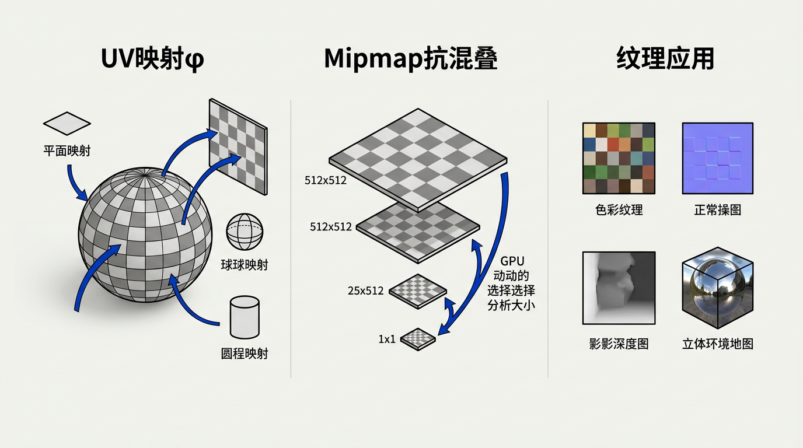

本讲义基于 Steve Marschner & Peter Shirley 所著《虎书》（Fundamentals of Computer Graphics）第5版第11章（p.272-306）纹理映射。
将图像贴到曲面的核心机制——纹理坐标函数（平面/球面/柱面/立方体）、mipmap、三线性滤波、各向异性滤波、法线贴图、阴影贴图、Perlin 噪声。
本版插画采用 Guizang 材质插画风格重新绘制。

当试图复制真实世界的外观时，你很快就会意识到几乎没有任何表面是无特征的。木材（wood）生长时带有纹理；皮肤（skin）生长时带有皱纹；布料（cloth）展现其编织结构；油漆（paint）显示刷子或滚筒留下的痕迹。即使是光滑的塑料（plastic），也是在上面模压出凸起而制成的，而光滑的金属（metal）则显示出制造过程的加工痕迹。曾经无特征的材料很快就会布满划痕、凹痕、污渍、刮痕、指纹和灰尘。
生活类比：想象你买了一部新手机——出厂时背面是光滑完美的。但用了一个月后，上面就布满了指纹、划痕、边角磨损。这些"微小瑕疵"在计算机图形学中正是纹理映射要模拟的东西：你不是单独建模每一道划痕，而是给表面"贴"上一层包含这些细节的贴纸——就像给手机贴了一张印有磨损效果的膜。
在计算机图形学中，我们将所有这些现象归入"空间变化表面属性（spatially varying surface properties）"的范畴——这些表面属性因位置而异，但不会以有意义的方式改变表面的形状。为了支持这些效果，各种建模和渲染系统提供了某种形式的纹理映射（texture mapping）：使用一张图像——称为纹理贴图（texture map）、纹理图像（texture image），或简称为纹理（texture）——来存储你想要放在表面上的细节，然后通过数学方法将该图像"映射"到表面上。这里的"映射"使用的是第 2.1 节中的含义。
想一想：为什么纹理映射如此普遍？因为"建模一切"是不可行的——真实世界的表面细节是无限复杂的。一根头发丝的直径大约是 0.05mm，高清屏幕的像素大约 0.2mm。如果你要给一个角色建模每一根头发、每一道毛孔、每一丝皱纹，需要的三角形数量是天文数字。纹理映射的本质是一种信息压缩——用 2D 像素数组替代 3D 几何体，把 O(n³) 的几何复杂度降为 O(n²) 的图像复杂度。
事实证明，一旦存在将图像映射到表面上的机制，就有许多不那么显而易见的用途可以超越引入表面细节的基本目的。纹理可以用来制作阴影（shadows）和反射（reflections），提供照明（illumination），甚至定义表面形状（surface shape）。在复杂的交互式程序中，纹理被用来存储各种甚至与图片完全无关的数据！
本章讨论使用纹理来表示表面细节、阴影和反射。基本思想很简单，但有几个实际问题使纹理的使用变得复杂。首先，纹理很容易失真（distorted），设计将纹理映射到表面上的函数很有挑战性。此外，纹理映射是一个重采样过程（resampling process）——就像重新缩放图像一样——而正如我们在第 10 章中看到的，重采样很容易引入混叠伪影（aliasing artifacts）。纹理映射和动画一起使用时尤其容易产生真正引人注目的混叠，而纹理映射系统（texture mapping system）的大部分复杂性都是由用于驯服这些伪影的抗混叠措施（antialiasing measures）造成的。
想一想：为什么动画中的纹理混叠尤其糟糕？在静止图像中，轻微的像素错误可能被忽略。但当摄像机移动时，纹理以亚像素精度偏移，错误像素在帧之间"跳舞"——这种时间混叠（temporal aliasing）人眼极其敏感。就像电视剧中角色穿着细条纹衬衫时屏幕会闪烁一样——这就是纹理混叠的实际表现。正因为动画放大了一切伪影，游戏引擎在纹理滤波（texture filtering）上投入了大量硬件资源。
让我们从一个简单的纹理映射应用开始。我们有一个带有木地板（wood floor）的场景，我们希望地板的漫反射颜色（diffuse color）由一张显示带有木纹的地板条的图像来控制。无论使用光线追踪（ray tracing）还是光栅化（rasterization），计算光线-表面交点或光栅化器生成片元的着色代码都需要知道着色点处的纹理颜色，以便将其用作第 5 章中兰伯特着色模型（Lambertian shading model）的漫反射颜色。
为了获取这个颜色，着色器执行纹理查找（texture lookup）：它找出纹理图像坐标系中与着色点对应的位置，并读出图像中该点处的颜色——即纹理样本（texture sample）。然后该颜色被用于着色，并且由于纹理查找在看到地板的每个像素处都发生在纹理中的不同位置，图像中会显示出一个不同颜色的图案。完整的着色流程伪代码如下：
// 纹理查找：在纹理图像中取对应 (u,v) 坐标处的颜色
Color texture_lookup(Texture t, float u, float v) {
int i = round(u * t.width() - 0.5)
int j = round(v * t.height() - 0.5)
return t.get_pixel(i,j)
}
// 表面点着色：获取法线和纹理坐标，计算漫反射颜色
Color shade_surface_point(Surface s, Point p, Texture t) {
Vector normal = s.get_normal(p)
(u,v) = s.get_texcoord(p)
Color diffuse_color = texture_lookup(u,v)
// 使用 diffuse_color 和 normal 计算 Lambert 着色
// 例如：Color result = diffuse_color * max(0, dot(n,L))
return result
}
上述伪代码中隐藏了一个关键步骤：连续归一化坐标到离散纹素索引的映射。纹理坐标 (u,v) 定义在连续域 [0,1]² 上，而纹理图像是像素的离散数组。完整的映射链条为：
// 完整的三阶段纹理查找映射链
阶段 1：表面点 → 连续纹理坐标
φ : S → [0,1]²
φ(p) = (u, v) // u,v ∈ [0,1] 的实数
阶段 2：连续纹理坐标 → 离散纹素索引
给定宽度为 w、高度为 h 的纹理图像：
i_continuous = u · w // 实值列坐标，范围 [0, w]
j_continuous = v · h // 实值行坐标，范围 [0, h]
阶段 3：离散纹素索引 → 颜色值（涉及重建滤波器）
最近邻：i = round(i_continuous − 0.5)
j = round(j_continuous − 0.5)
color = tex[i][j]
双线性：color = interpolate_bilinear(tex, i_continuous, j_continuous)
// 读取四个最近纹素并加权混合
这里 offset -0.5 的引入是因为纹素中心位于半整数坐标处：纹素 (0,0) 的中心在实值坐标 (0.5, 0.5) 处。当 u=0 时，i_continuous=0，round(0−0.5)=round(−0.5)=0，正确索引到第一个纹素。
理解不同重建滤波器对混叠行为的影响是掌握纹理抗混叠的基础。考虑一个典型的放大场景——纹理中一个纹素覆盖屏幕上 4×4 个像素——对比两种滤波器的行为：
// 最近邻采样 (Nearest-Neighbor)
// —— 无重建滤波器，直接取纹素值
对于屏幕像素落在纹理坐标 (u,v) 处：
i = round(u·w − 0.5)
j = round(v·h − 0.5)
color = tex[i][j]
特点：
- 相邻像素如果落入同一纹素，获得完全相同颜色 → 块状伪影
- 相邻像素恰好在纹素边界两侧，颜色突然跳变 → 锯齿边缘
- 动画中，纹素边界在像素网格上滑动 → "像素游泳"效果
- 信号分析：最近邻 = 盒状滤波器 → 频域引入旁瓣，高频泄漏到低频
// 双线性采样 (Bilinear)
// —— 帐篷/三角形重建滤波器
对于屏幕像素落在纹理坐标 (u,v) 处：
i_c = u·w − 0.5 // 实值列坐标
j_c = v·h − 0.5 // 实值行坐标
i0 = floor(i_c); i1 = i0 + 1
j0 = floor(j_c); j1 = j0 + 1
fi = i_c − i0 // i 方向的小数偏移 ∈ [0,1)
fj = j_c − j0 // j 方向的小数偏移 ∈ [0,1)
color = (1−fi)·(1−fj) · tex[i0][j0]
+ fi ·(1−fj) · tex[i1][j0]
+ (1−fi)· fj · tex[i0][j1]
+ fi · fj · tex[i1][j1]
特点：
- 相邻像素获得平滑过渡 → 无块状伪影
- 频域：帐篷滤波器 = sinc² → 主瓣更宽，旁瓣衰减 ∝ 1/f²
- 相比最近邻更好地抑制高频混叠，但牺牲一些锐度
- 代价：4 次内存读取 vs 最近邻的 1 次
深度理解：为什么双线性不能完全消除混叠？双线性插值在放大场景——足迹小于纹素间距——中表现良好，因为它在纹素间重建了连续信号。但在缩小场景——足迹覆盖多个纹素——中，双线性无法替代真正的面积平均：它仍然只读取 4 个纹素，而足迹可能覆盖数百个纹素。这就好比用 4 个点的采样来估计包含 400 个值的分布——无论权重多么巧妙，信息损失是根本性的。这也是为什么 mipmap 对缩小场景不可或缺——双线性仅在单个 mipmap 级别内足够，跨多个纹素的平均需要金字塔预计算。
在这段代码中，着色器询问表��在纹理中的哪个位置查找，而我们想要使用纹理着色的每个表面都需要能够回答这个查询——"你这个着色点的纹理坐标 (u,v) 是多少？"这带我们来到了纹理映射的第一个关键要素：我们需要一个能够轻松为每个像素计算的、从表面到纹理的函数。这就是纹理坐标函数（texture coordinate function，图 11.1）。从数学上讲，它是一个从表面到纹理空间的映射：
φ : S → T = [0,1]² 其中 S 是表面（三维空间中点的集合） T 是纹理空间（通常为单位正方形） 对于表面上任意点 p ∈ S，φ(p) = (u,v) 给出其在纹理中的坐标
以最简单的形式使用纹理坐标函数——仅仅使用空间坐标 (x,y) 作为纹理坐标——意味着点 (x,y,z) 从纹理的位置 (x,y) 处获取纹理值。这相当于令 φ(x,y,z) = (x,y)，即直接将 3D 坐标的前两个分量用作纹理坐标（适当缩放后映射到 [0,1] 范围）。图 11.2 展示了一个用这种方式渲染的木地板。
想一想：φ(x,y,z) = (x,y) 什么时候不够用？只要表面不平行于 xy 平面。想象一把椅子的弯曲靠背——靠背的中间部分在 y 方向可能是 0.5m，两端只有 0.1m。用 y 坐标作为 v 纹理坐标的结果是：靠背中间的纹理被拉伸（因为同样单位的 y 变化对应更小的表面面积变化），两端的纹理被压缩。这就是参数化失真的最简单例子。
最简单形式的纹理映射所产生的另一个问题通过对一张高对比度纹理以非常低掠的角度渲染到低分辨率图像中得到了戏剧性的说明。图 11.3 显示了一个以相同方法渲染但使用高对比度网格图案和朝向地平线视图的大平面。你可以看到它包含混叠伪影（aliasing artifacts）——前景中呈阶梯状、远处呈波浪状和闪烁状图案——类似于第 10 章中不适当使用滤波器时图像重采样产生的伪影。尽管需要极端情况才能使这些伪影在印刷在书中的一张微小静止图像中如此明显，但在动画中这些图案会到处移动，即使它们更加微妙也非常分散注意力。
生活类比：把纹理混叠想象成透过纱窗看远处的砖墙。如果砖的间距和纱窗网格的间距恰好匹配（或呈整数倍关系），你会看到奇怪的波浪图案——这就是摩尔纹（Moiré pattern）。同样，当纹理中的细节（砖块）以与屏幕像素网格（纱窗）不匹配的速率被采样时，就会出现混叠伪影。改变距离或角度可以消除纱窗效应，但在游戏中摄像机不断移动时，混叠不断"扫描"表面——形成极其分散注意力的闪烁。
我们现在已经看到了基本纹理映射中的两个主要问题：
这两个关注点对于所有类型的纹理映射应用都是根本性的，分别在第 11.2 节和第 11.3 节中讨论。一旦你理解了它们以及它们的一些解决方案，你就理解了纹理映射——剩下的仅仅是如何将基本的纹理映射机制用于各种不同目的的应用，这在第 11.4 节中讨论。
设计良好的纹理坐标函数 φ 是为纹理映射获取良好结果的关键要求（key requirement）。你可以将其视为决定如何变形一张平面的矩形图像，使其贴合到你想绘制的三维表面上。或者反过来想：你是将表面在不使其起皱、撕裂或折叠的情况下轻轻地展平，使其平坦地躺在图像上。有时这很容易——也许三维表面本身已经是一个平坦的矩形了。在其他情况下，这异��棘手——三维形状可能非常复杂，就像角色的身体表面一样。
定义纹理坐标函数的问题对计算机图形学来说并不是新的。制图师（cartographers）在设计覆盖大面积地球表面的地图（maps）时面临着完全相同的问题：从弯曲的地球到平面地图的映射不可避免地对面积、角度和/或距离造成失真（distortion），这很容易使地图非常误导人。许多世纪以来，人们提出了许多地图投影（map projections），都平衡了纹理映射中面临的同样竞争性关注点——在覆盖大量区域的同时以一张连续的图表最小化各种类型的失真。
生活类比：考虑地图投影问题：你需要把地球（3D 球面）变成平面地图（2D 矩形）。格陵兰在墨卡托投影（Mercator projection）中看起来比非洲还大，但实际上非洲面积是格陵兰的 14 倍——这就是尺寸失真。南北极地区在等距矩形投影（equirectangular projection）中被极度横向拉伸——这就是形状失真。而为了制作地球仪上连续的全球地图，你必须在某处切割（通常是太平洋中间）——这就是连续性断裂（接缝）。纹理映射要解决的是完全相同的三个问题。
在某些应用中（如第 11.2.1 节中的例子），有明确的理由使用特定的映射。但在大多数情况下，设计纹理坐标映射是一项平衡竞争性关注点的精细任务，熟练的建模师会投入大量精力来完成这项任务。"UV 映射（UV mapping）"或"表面参数化（surface parameterization）"是你可能遇到的纹理坐标函数的其他名称。
你几乎可以以任何你能想象到的方式定义 φ。但有几个竞争性的目标需要考虑：
想一想：这四个目标之间存在根本性的张力（tension）。你无法同时完美满足所有目标——这类似于信号处理中的不确定性原理（uncertainty principle）。例如：如果你想要零形状失真（共形映射），你可能需要在某些地方接受大尺寸失真（墨卡托投影中格陵兰被放大）；如果你想要零尺寸失真（等面积映射），你可能需要接受形状失真（阿尔伯斯投影中的大陆被压扁）；如果你想要零连续性断裂，你必须在极点附近接受巨大的失真。理解这种张力是成为优秀纹理艺术家的关键。
由参数方程（parametric equations，第 2.7.8 节）定义的表面带有内置的纹理坐标函数选择：简单地反转定义表面的函数，并使用表面的两个参数 (s,t) 作为纹理坐标。例如，球面由 (θ,φ) 参数化，那么 (u,v) = (θ/(2π), φ/π) 就是一个自然的纹理坐标映射。这些纹理坐标可能具有或不具有理想的属性，具体取决于表面，但它们确实提供了一种映射。
但对于隐式定义（implicitly defined）的表面，或者仅由三角网格（triangle mesh）定义的表面，我们需要不依赖现有参数化的其他方式来定义纹理坐标。广义上讲，定义纹理坐标的两种方式是从表面点的空间坐标几何地计算它们，或者对于网格表面，在顶点处存储纹理坐标的值并在表面上对它们进行插值。让我们逐一看看这些选项。
几何确定（geometrically determined）的纹理坐标用于简单形状或特殊情况，作为快速解决方案，或作为设计手工调整纹理坐标映射的起点。我们将通过将图 11.4 中的测试图像映射到表面上来说明各种纹理坐标函数。图像中的数字让你可以从渲染图像中读出近似的 (u,v) 坐标，网格让你看到映射的失真程度。
可能最简单的从三维到二维的映射是平面投影（planar projection）——与用于正交视图的相同映射（图 11.5）。我们已经为视图（第 8.1 节）开发的机制可以直接重用于定义纹理坐标：正如正交视图归结为乘以一个矩阵并丢弃 z 分量一样，通过平面投影生成纹理坐标可以通过一个简单的矩阵乘法来完成：
φ(x,y,z) = (u,v)
其中 [u] [x]
[v] = Mt · [y]
[*] [z]
[1] [1]
纹理矩阵 Mt 是一个 3×4（或 4×4，最后一行 [0,0,0,1]）仿射变换矩阵。
星号 * 表示我们不关心第三坐标中得到什么。
这相当于一个任意的仿射 3D→2D 投影：u = a₁₁x + a₁₂y + a₁₃z + a₁₄，v = a₂₁x + a₂₂y + a₂₃z + a₂₄。如果投影方向与表面的平均法线对齐，这对于大多数开始时就大致平坦的表面效果相当好——没有太多的表面法线变化。然而，对于任何类型的封闭形状，平面投影将不是单射的：正面和背面的点将映射到纹理空间中的同一个点（图 11.6）。在投影方向与表面相切的位置附近还会出现极端失真。
想一想：平面投影本质上是把纹理当成幻灯机从某个方向投射到物体上。这意味着光线穿过的每个点都会获得相同的纹理坐标——如果你用一盏灯从顶部照向一个人，灯光的"正面"（头顶）和"背面"（脚底，如果光线能穿透的话）会获得相同的坐标。这解释了为什么平面投影在封闭表面上总是产生非单射（non-injective）映射。
通过简单地用透视投影替换正交投影，我们得到投影纹理坐标（projective texture coordinates，图 11.7）：
φ(x,y,z) = (ũ/w, ṽ/w)
其中 [ũ] [x]
[ṽ] = Pt · [y]
[*] [z]
[w] [1]
4×4 矩阵 Pt 表示一个投影变换（不一定是仿射的）
——最后一行可能不是 [0,0,0,1]。
现在 4×4 矩阵 Pt 表示一个投影变换（projective transformation，不一定是仿射）。投影纹理坐标之所以重要，是因为它们在阴影贴图（shadow mapping）技术中的关键作用——详见第 11.4.4 节。从光源视角渲染时，透视投影自然产生投影纹理坐标，这正是阴影贴图工作中所需要的。在渲染中，投影纹理有时也被称为"聚光灯贴图"或"go-bo"效果——就像在舞台上用带有图案的聚光灯投射光斑一样。
透视纹理坐标与普通仿射纹理坐标的本质区别在于齐次除法（homogeneous division）——这是将 4D 齐次坐标投影回 2D 的关键步骤。理解这个过程需要追踪 w 分量如何被引入、传递和用于除法：
// 透视纹理映射的完整数学推导
步骤 1：世界空间点 → 裁剪空间（4D 齐次坐标）
设光源位于位置 L，使用透视投影矩阵 P_light（如标准的透视视锥体矩阵）：
[x_clip] [x_world]
[y_clip] = P_light · [y_world]
[z_clip] [z_world]
[w_clip] [1]
对于典型的透视投影（对称视锥，near=n, far=f, FOV=2·atan(1/t)）：
[ t 0 0 0 ]
P_light = [ 0 t 0 0 ]
[ 0 0 -(f+n)/(f−n) -2fn/(f−n) ]
[ 0 0 −1 0 ]
关键：第 4 行 [0 0 −1 0] 使得 w_clip = −z_world
——w_clip 承载了深度信息（在最简单的情况下就是视角空间中的 z 值取反）
步骤 2：齐次除法（透视除法，perspective divide）
齐次坐标 (x_clip, y_clip, z_clip, w_clip) 必须除以 w_clip 以回到 3D：
x_ndc = x_clip / w_clip
y_ndc = y_clip / w_clip
z_ndc = z_clip / w_clip
这是 GPU 光栅化管线自动执行的步骤（在顶点着色器输出 gl_Position 之后）。
步骤 3：NDC → 纹理坐标
从 NDC（范围 [−1,1]）映射到纹理坐标（范围 [0,1]）：
u = (x_ndc + 1) / 2
v = (y_ndc + 1) / 2
组合到一步：
u = (x_clip/w_clip + 1) / 2 = (x_clip + w_clip) / (2·w_clip)
v = (y_clip/w_clip + 1) / 2 = (y_clip + w_clip) / (2·w_clip)
步骤 4：纹理空间中的透视校正插值
这是理解纹理映射的核心：在屏幕空间中，u、v 不与屏幕坐标线性相关。
原因：透视除法使得关系变为有理函数形式。
正确的方法是在屏幕空间中对 (u/w, v/w, 1/w) 进行线性插值（这些量确实是线性的），
然后在每个片元处通过除法恢复正确的 u 和 v：
在三角形顶点处计算： (u_A/w_A, v_A/w_A, 1/w_A)
↓
重心插值（在屏幕空间中线性变化！）：
u_interp/w_interp = Σ α_i · (u_i/w_i)
v_interp/w_interp = Σ α_i · (v_i/w_i)
1/w_interp = Σ α_i · (1/w_i)
↓
每个片元处恢复：
u_correct = (u_interp/w_interp) / (1/w_interp)
v_correct = (v_interp/w_interp) / (1/w_interp)
// 为什么 (u/w) 在屏幕空间中是线性的？
// 证明概要：
// 在三维齐次裁剪空间中，三角形是平面。
// 平面上任意属性 a 都可以表示为空间坐标的线性函数：a = α·x + β·y + γ·z + δ
// 在屏幕空间 (x/w, y/w) 中，a/w = α·(x/w) + β·(y/w) + γ·(z/w) + δ·(1/w)
// 由于 z/w 在裁剪平面中也是 (x/w, y/w) 的线性函数，且 w 本身在屏幕空间中
// 是仿射量（因此 1/w 也是线性的），可知 a/w 是 (x/w, y/w) 的线性函数。
// 具体到纹理坐标：u/w 和 v/w 在屏幕空间中都是线性的。□
常见误解澄清：许多人以为透视校正只是"对纹理坐标多除一个 w"——这是不完整的。全套透视校正需要三步：1) 在顶点处预除：将属性值除以 w；2) 屏幕空间插值：对 (属性/w) 和 (1/w) 分别进行标准的线性插值；3) 片元处恢复：用插值后的 (属性/w) 除以插值后的 (1/w)。这三步共同构成了有理线性插值（rational linear interpolation），即第 2.7.8 节中介绍的"透视校正插值"。早期的软件渲染器（如 Quake 引擎的原始版本）为了性能使用仿射纹理映射（跳过第 3 步），结果在靠近摄像机的多边形上产生明显的纹理游动——这是 1990 年代 3D 游戏的标志性"缺陷"。
对于球体，纬度/经度参数化（latitude/longitude parameterization）是熟悉且广泛使用的。它在极点（poles）附近有很多失真——这可能导致困难——但它确实覆盖了整个球体，仅沿一条经线存在不连续。
大致呈球形的表面可以使用纹理坐标函数进行参数化，该函数使用径向投影（radial projection）将表面上的点映射到球面上的一点：从球体的中心画一条穿过表面上该点的直线，并找到与球体的交点。该交点的球面坐标就是你起始的表面点的纹理坐标。另一种表述方式是：你将表面点表示为球面坐标 (ρ, θ, φ)，然后丢弃 ρ 坐标，并将 θ 和 φ 各映射到范围 [0,1]。
// 球面投影纹理坐标（使用 2.7.8 节的约定） // 球心在原点，表面点在 [-1,1]³ 的盒子内 φ(x,y,z) = ( [π + atan2(y,x)] / 2π , [π − acos(z/∥x∥)] / π ) 其中 ∥x∥ = sqrt(x² + y² + z²) atan2(y,x) 返回从 x 轴到向量 (x,y) 的角度，范围 (−π, π] acos(z/∥x∥) 返回从 z 轴到向量的角度，范围 [0, π]
如果从中心点可以看到整个表面，球面坐标映射将在除极点以外的所有地方是双射的。它继承了与球面上纬度-经度地图相同的极点附近失真——极点处纹理被水平压缩成一条线，形状失真和尺寸失真都极为严重。
要定量理解球面纹理映射在极点处的失真，我们需要分析映射 φ 的雅可比矩阵（Jacobian）。将纹理坐标函数 φ(x,y,z) = (u,v) 重写为基于球面角 (θ, φ_sph) 的参数形式（注意这里 φ_sph 是极角，不要与纹理映射函数 φ 混淆）：
// 球面纹理映射的参数形式
令表面点用球面坐标表示：p = (sin φ_sph · cos θ, sin φ_sph · sin θ, cos φ_sph)
纹理坐标函数：
u = θ / (2π) = atan2(y, x) / (2π) // 经度归一化到 [0,1]
v = φ_sph / π = acos(z/∥p∥) / π // 极角归一化到 [0,1]
// 雅可比矩阵：计算 (u,v) 对 (θ, φ_sph) 的偏导数
J(θ, φ_sph) = [ ∂u/∂θ ∂u/∂φ_sph ] = [ 1/(2π) 0 ]
[ ∂v/∂θ ∂v/∂φ_sph ] [ 0 1/π ]
// 纹理空间中微小区域的面积 dA_tex 与球面上微小区域的面积 dA_sphere 的关系：
dA_tex = |det(J)| · dA_sphere_params
但由于我们需要的是表面积，而非参数面积，需要引入球面的度量张量：
球面上的面积元素：dA_sphere = ∥p_θ × p_φ∥ dθ dφ_sph = sin φ_sph · dθ dφ_sph
其中 p_θ = ∂p/∂θ = (−sin φ·sin θ, sin φ·cos θ, 0)
p_φ = ∂p/∂φ = (cos φ·cos θ, cos φ·sin θ, −sin φ)
∥p_θ∥ = sin φ_sph, ∥p_φ∥ = 1, p_θ ⊥ p_φ → ∥p_θ × p_φ∥ = sin φ_sph
// 面积拉伸因子（areal distortion factor）
纹理面积 / 球面面积 = dA_tex / dA_sphere
= |det(J)| · dθ dφ_sph / (sin φ_sph · dθ dφ_sph)
= (1/(2π) · 1/π) / sin φ_sph
= 1 / (2π² · sin φ_sph)
// 关键发现：
当 φ_sph → 0 时（北极），sin φ_sph → 0 → 面积拉伸因子 → ∞
当 φ_sph = π/2 时（赤道），sin φ_sph = 1 → 面积拉伸因子 = 1/(2π²)（最小值）
当 φ_sph → π 时（南极），sin φ_sph → 0 → 面积拉伸因子 → ∞
物理含义：
在极点附近，球面上 1 mm² 的表面被映射到纹理中无限大的区域
→ 或者说，纹理中的一个纹素在极点处覆盖球面上几乎为零的面积
→ 极点附近的纹理细节对最终渲染的贡献几乎为零（被极度压缩）
→ 宝贵的纹理分辨率在极点处被严重浪费
想一想：面积拉伸因子的奇异性揭示了一个深层几何事实——球面不能无损地展开为平面矩形。高斯在 1827 年发表的绝妙定理（Theorema Egregium）证明了曲面的高斯曲率在等距（保面积）映射下不变。球面的高斯曲率恒为 1/R² > 0，而平面的高斯曲率为 0——因此不存在任何从球面到平面的完美保面积映射。球面纹理映射中极点附近的奇异性不是算法的缺陷，而是几何学的必然。立方体贴图通过将曲率集中在 8 个角点和 12 条边上，而非两个极点，来"分散"这种不可避免的失真。
生活类比：把橘子皮剥下来摊平。无论你多么小心，橘子皮都会在边缘撕裂——这就是球面到平面的连续映射不可能性（高斯绝妙定理的一个推论）。纹理映射艺术家面对的是同样的问题：一个球面不能无损展开为平面。球面投影接受在极点处的严重失真，作为覆盖整个球面的代价——类似于墨卡托世界地图无法显示两极的事实。
对于比球形更接近柱形的物体，从一条轴线向外投影到圆柱体上可能比从一个点投影到球体上效果更好（图 11.9）。类似于球面投影，柱面投影（cylindrical projection）从表面点径向向外投影——这次是投影到包围的圆柱体上——以获取纹理坐标。这相当于将点转换为柱面坐标然后丢弃半径分量：
// 柱面投影纹理坐标 // 轴线为 z 轴，圆柱半径为 1 φ(x,y,z) = ( [π + atan2(y,x)] / 2π , [1 + z] / 2 ) u 分量与球面投影相同（水平环绕角度） v 分量是垂直高度 z 的线性函数
对于大致呈柱形的物体（如角色的躯干、树干、花瓶），这比球面坐标产生更少的失真，并且已被广泛用于为虚拟角色（大致呈柱形的躯干）构建纹理坐标。柱面投影的一个优势是：v 坐标沿高度方向均匀分布，不会像球面投影那样在极点附近堆积。
使用球面坐标参数化球状或类球形状导致极点附近形状和面积的严重失真——这常常会导致可见伪影，暴露出有两个特殊点存在异常。一个流行的替代方案更加均匀，代价是有更多的不连续。想法是投影到立方体（cube）而不是球体上，然后对立方体的六个面使用六张独立的正方形纹理。这六张方形纹理的集合称为立方体贴图（cubemap）。这沿立方体的所有边缘引入了不连续，但保持了形状和面积的低失真。
// 立方体贴图纹理坐标 // 对于投影到 +z 面的点 (该面 x,y ∈ [−1,1])： (x, y, z) ↦ ( x/z , y/z ) // 类似地： // +x 面：(y/x, z/x) // −x 面：(−y/−x, z/−x) 或 (y/x, z/x) // +y 面：(x/y, z/y) // −y 面：(x/−y, z/−y) 或 (x/y, z/y) // −z 面：(−x/−z, y/−z) 或 (x/z, y/z) // 再将 (−1,−1) 到 (1,1) 映射到每个面的 (0,1)²
计算立方体贴图纹理坐标也比球面坐标便宜，因为投影到平面仅需要一次除法——本质上与透视投影相同。立方体贴图的一个令人困惑的方面是为六个面建立 u 和 v 方向定义的约定。任何约定都可以，但所选约定会影响纹理的内容，因此标准化很重要。立方体贴图对于表示周围环境特别有用（第 11.4.5 节），因为无论方向如何，它们都提供了低失真的纹理访问。
想一想：为什么立方体贴图比球面贴图更常见？核心原因是均匀性（uniformity）：立方体贴图的六个面每个都覆盖立体角的 1/6（约 1.05 球面度），且每个面都是平面正方形——没有极点失真。而球面贴图在极点附近将无限大的立体角压缩到一行像素中，造成极大的分辨率浪费。在 GPU 中，立方体贴图也更容易硬件实现：投影到平面只需要一次除法，比反三角函数（atan2, acos）快了数十倍。
对于三角网格中定义的表面，最常见的定义纹理坐标的方法是在网格的每个顶点显式地为表面分配纹理坐标，然后使用重心插值（barycentric interpolation，第 9.1.2 节）在三角形内部进行插值来获得内部点的纹理坐标。它以与你在网格上定义的任何其他平滑变化量（颜色、法线、甚至 3D 位置本身）完全相同的方式工作。
// 在三角形 ΔABC 内使用重心坐标 (α, β, γ) 插值纹理坐标 // α + β + γ = 1，α,β,γ ≥ 0 对于三角形内部点 p = α·A + β·B + γ·C： u(p) = α·u_A + β·u_B + γ·u_C v(p) = α·v_A + β·v_B + γ·v_C 其中 (u_A,v_A), (u_B,v_B), (u_C,v_C) 是顶点 A,B,C 处存储的纹理坐标。
让我们看一个单三角形的例子。图 11.11 显示了一个三角形，其纹理映射了我们熟悉的测试图案的一部分。通过查看渲染三角形上出现的图案，你可以推断出三个顶点的纹理坐标分别是 (0.2,0.2), (0.8,0.2) 和 (0.2,0.8)——因为这些正是出现在三角形三个角处的纹理中的点。
就像前一节中的几何确定映射一样，我们通过指定从表面到纹理域的映射来控制纹理在表面上的位置——在本例中是通过指定每个顶点在纹理空间中应该位于哪里。一旦你定位了顶点，跨三角形的线性（重心）插值就处理了其余部分。
在图 11.12 中，我们展示了一种可视化整个网格上的纹理坐标的常用方法：在纹理空间中绘制三角形，顶点位于其纹理坐标处。这被称为网格的UV 布局（UV layout）。
生活类比：把纹理映射想象成印花布（patterned fabric）。你在制作一件衣服时，需要把二维的布片（纹理）按照特定方式剪裁和缝合到三维的身体上。三角网格的 UV 映射就是这个过程：建模师决定布料的每一片（三角形）应该取自图案的哪个位置。优秀的 UV 艺术家就像优秀的裁缝——他们知道如何用最少的接缝和最少的拉伸把图案完美贴合到身体上。
纹理坐标不一定需要限制在 [0,1]² 中。当坐标超出该范围时，环绕模式（wrapping mode）决定如何将纹理坐标映射到纹理中的位置。本质上，我们将纹理从有限图像数据扩展为在整个无限 2D 平面上定义的函数。
最常见的环绕模式有三种：
Color texture_lookup_tile(Texture t, float u, float v) {
int i = round(u * t.width() - 0.5)
int j = round(v * t.height() - 0.5)
return t.get_pixel(i % t.width(), j % t.height())
}
Color texture_lookup_clamp(Texture t, float u, float v) {
int i = round(u * t.width() - 0.5)
int j = round(v * t.height() - 0.5)
i = max(0, min(i, t.width() - 1))
j = max(0, min(j, t.height() - 1))
return t.get_pixel(i, j)
}
此外，在纹理查找之前，可以将一个矩阵变换应用于纹理坐标。这在调整纹理的尺度、位置和旋转时非常方便——不需要实际改变生成纹理坐标的函数或存储在网格顶点处的纹理坐标值。常见的变换包括：
// 纹理坐标矩阵变换 // 在采样前对 (u,v) 应用仿射矩阵 [u'] [s_u 0 t_u] [u] [v'] = [0 s_v t_v] [v] [0 ] [0 0 1 ] [1] 其中 s_u, s_v 是缩放因子，t_u, t_v 是平移量 还可以加入旋转：u' = u·cos(θ) − v·sin(θ), v' = u·sin(θ) + v·cos(θ)
缩放纹理会改变纹理在表面上的大小（缩放 v 压缩或拉伸纹理）；旋转纹理可以改变图案方向；偏移可以平移纹理。为这种变换添加动画——随时间改变偏移（产生流动效果）或旋转（产生旋转的天空）——是一种低成本但效果显著的特效技术，广泛用于水面、云层和传送门效果中。
想一想：为什么环绕模式如此重要？考虑一个砖墙纹理：如果每面墙都需要一张单独的纹理，场景中 50 面墙就需要 50 张不同大小的纹理——内存爆炸。平铺模式让你用一张 256×256 的砖块纹理覆盖任意大小的墙面，因为纹理在 u 和 v 方向无限重复。这就是"程序化的感觉但用的是图像"——有限数据产生无限变化。
纹理坐标是正在渲染的模型（model）的一部分，场景描述需要包含足够的信息来定义它们是什么。大多数情况下，这意味着将纹理坐标存储为所有将使用纹理的三角网格的逐顶点属性（per-vertex attributes）。如果渲染系统直接支持除网格之外的几何图元，这些图元通常具有预定义的纹理坐标（如球面上的纬度-经度坐标），可能还有每种图元类型可选的映射方案。
在光线追踪（ray tracing）渲染器中，每种支持光线求交的表面类型必须能够计算不仅交点位置和表面法线，还包括交点的纹理坐标。与其他关于交点的信息一样，纹理坐标可以存储在命中记录（hit record，见第 4.4.3 节）中。在由三角网格表示的几何体常见情况下，光线-三角形求交代码将通过从存储在顶点处的纹理坐标进行重心插值来计算纹理坐标；对于其他类型的几何体，求交代码必须直接计算纹理坐标。
在基于光栅化（rasterization）的系统中，三角形通常是唯一支持的几何体类型，因此所有表面都必须转换为此形式。纹理坐标可以与模型一起读入（常见情况），或者对于在代码中生成的三角网格，可以在创建网格时计算和存储。另外，对于可以从其他顶点数据计算出的纹理坐标（例如，从 3D 位置计算纹理坐标），纹理坐标也可以在顶点着色器（vertex shader）中计算并传递给光栅化器。纹理坐标然后由光栅化器进行透视校正插值，使得每次片元着色器（fragment shader）的调用都获得其片元的适当纹理坐标。
想一想：光线追踪 vs 光栅化中的纹理坐标——为什么处理方式不同？在光栅化中，你从三角形顶点出发向外生成片元，通过透视校正插值得出每个片元的 (u,v)。在光线追踪中，你从像素出发向内寻找交点，在命中时反向计算重心坐标然后插值得出 (u,v)。虽然方向相反，但数学是相同的：两者都是重心插值。关键差异在于：光线追踪可以在任意几何体（不仅是三角形）上进行纹理查找，而光栅化需要将所有东西三角剖分。
纹理映射的第二个根本问题是抗混叠（antialiasing）。渲染纹理映射后的图像是一个采样过程（sampling process）：将纹理映射到表面上然后将表面投影到图像中，在图像平面上产生了二维函数，而我们在像素处对该函数进行采样。正如第 10 章所见，使用点采样会在图像包含细节或锐利边缘时产生混叠伪影——而纹理的全部意义就是引入细节，因此它们成为混叠问题的主要来源（如图 11.3 所示）。
正如线条和三角形的抗混叠光栅化（第 9.3 节）、抗混叠光线追踪或图像降采样（第 10.4 节）一样，解决方案是使每个像素不是点采样，而是在与像素相似大小的区域上对图像进行面积平均（area average）。使用与抗混叠光栅化和光线追踪相同的超采样（supersampling）方法，以足够多的样本，可以在不改变纹理映射机制的情况下获得出色的结果：像素区域内的多个样本将落在纹理图中的不同位置，平均使用不同纹理查找计算的着色结果是近似像素上图像平均颜色的准确方式。然而，对于细节丰富的纹理，需要非常多��样本才能获得好结果——这很慢。在有表面纹理的情况下高效计算这种面积平均是纹理抗混叠的第一个关键主题。
纹理图像通常由栅格图像定义，因此还有一个重建问题（reconstruction problem）需要考虑，正如图像上采样（第 10.4 节）一样。纹理的解决方案相同：使用重建滤波器（reconstruction filter）在纹素之间进行插值。
生活类比：纹理抗混叠的问题本质是什么？想象你站在一幅巨大的壁画前——用鼻子贴着看，能看清每一笔触（这是纹理放大，magnification）。退后 50 米再看，壁画缩小为 A4 纸大小——一个像素需要覆盖原本数百个笔触的信息（这是纹理缩小，minification）。如果不做任何处理，选哪一个笔触代表整个像素完全是随机的——这就是混叠。纹理滤波就是要聪明地选择"我该告诉这个像素什么颜色才不至于误导观众"。
纹理抗混叠比其它类型抗混叠更复杂的原因在于：渲染图像与纹理之间的关系在不断变化。每个像素值应该计算为图像中属于该像素的区域上的平均颜色。在常见情况下像素正在"看着"单个表面，这对应于在表面的一个区域上取平均。如果表面颜色来自纹理，这反过来又对应于在纹理的相应部分——被称为像素的纹理空间足迹（texture space footprint）——上取平均。图 11.16 说明了方形区域（可能是低分辨率图像中的像素区域）的足迹如何映射到地板纹理空间中非常不同大小和形状的区域。
回顾渲染纹理时涉及的三个空间：将 3D 点映射到图像的投影 π，以及将 3D 点映射到纹理空间的纹理坐标函数 φ。为了处理像素足迹，我们需要理解这两个映射的复合：首先沿 π 反向从图像到达表面，然后沿 φ 正向到达纹理空间。这个复合映射：
ψ = φ ∘ π⁻¹ 即：ψ(image_point) = φ(π⁻¹(image_point)) 该复合映射决定了像素足迹： 一个像素的足迹是该像素在图像中的方形区域在映射 ψ 下的像。 具体来说： 图像中一个面积为 A_p 的像素，经 π⁻¹ 映射到表面上面积为 A_s 的片元， 再经 φ 映射到纹理空间中面积为 A_tex 的区域（即足迹）。 足迹的大小由 ψ 的雅可比矩阵（Jacobian）的行列式给出： A_tex ≈ A_p · |det(J_ψ)| 其中 J_ψ 是 ψ 在像素中心处的雅可比矩阵。
纹理抗混叠（texture antialiasing）的核心问题是：计算纹理在足迹上的平均值，并返回该平均值作为纹理样本。这正是保证像素颜色不含混叠的纹理值。
如图 11.16 所示，方形区域映射到纹理空间中形状和大小差异极大的区域。近距离低掠角被放大（足迹小），远距离高掠角被极度拉伸（足迹细长且面积大）。在典型场景中，每个像素的足迹大小和形状都不同。
由于真实的像素足迹形状可能非常复杂（受表面曲率和透视投影的复合影响），实际硬件（GPU 纹理单元）使用椭圆近似（elliptical approximation）来简化问题。椭圆可以用两个轴（长轴和短轴）和方向完全描述，这自然引出各向异性滤波的概念。
// 像素足迹的椭圆近似 —— 构建雅可比矩阵
出发点：纹理坐标 (u,v) 是屏幕坐标 (x,y) 的函数。
我们需要 ∂u/∂x, ∂u/∂y, ∂v/∂x, ∂v/∂y——纹理坐标对屏幕坐标的偏导数。
在 GPU 中，这些通过 ddx() 和 ddy() 函数获得（着色器中的内置函数）：
ddx(u) = ∂u/∂x ≈ 相邻像素之间 u 的差值（在 2×2 像素四边形上计算）
ddy(u) = ∂u/∂y
ddx(v) = ∂v/∂x
ddy(v) = ∂v/∂y
// 构建 2×2 雅可比矩阵 J：
J = [ ∂u/∂x ∂u/∂y ]
[ ∂v/∂x ∂v/∂y ]
// 像素足迹的尺度由矩阵 M = J·Jᵀ 的特征值决定：
M = [ (∂u/∂x)²+(∂u/∂y)² (∂u/∂x)(∂v/∂x)+(∂u/∂y)(∂v/∂y) ]
[ (∂u/∂x)(∂v/∂x)+(∂u/∂y)(∂v/∂y) (∂v/∂x)²+(∂v/∂y)² ]
// M 的特征值 λ₁, λ₂（λ₁ ≥ λ₂ ≥ 0）给出椭圆轴的长短：
长轴长度（以纹素为单位）：σ_max = sqrt(λ₁) → 覆盖最多纹素的方向
短轴长度（以纹素为单位）：σ_min = sqrt(λ₂) → 覆盖最少纹素的方向
// 各向异性比率（anisotropy ratio）：
R = σ_max / σ_min
当 R = 1 时：足迹接近圆形 → 各向同性，普通 mipmap 即可
当 R > 1 时：足迹呈椭圆形 → 需要各向异性滤波
典型值：掠射角查看地面 → R ≈ 8–16
远距离倾斜墙面 → R ≈ 4–8
这一形式化分析解释了为什么各向异性滤波在掠射角处如此重要：当 R=16 时，一个各向同性 mipmap 样本必须覆盖面积比例约为 R²=256 倍于实际需要的区域，造成极端模糊。
想一想：为什么不能用简单的"取足迹内所有纹素的平均"来解决？因为对于远距离像素，足迹可能覆盖数万个纹素。逐纹素访问这些纹素需要数千次内存读取——仅为一个像素！每秒渲染数百万像素时这完全不可行。这就是为什么需要 mipmap 这样的预计算方案：在纹理加载时提前做好不同尺度的平均，查询时只需要常数次内存访问。
当纹理被放大（magnified）——即像素足迹小于纹素间距时——我们需要在纹素之间进行插值以重建连续信号。正如第 10 章图像上采样一样，重建滤波器（reconstruction filter）提供了纹素之间的平滑过渡。
简单的最近邻（nearest-neighbor）采样仅选取坐标落入的纹素——这在放大时产生块状伪影，在缩小时产生严重的混叠。通过在采样之前使用重建滤波器——如双线性插值（bilinear interpolation，即帐篷滤波器）——可以大幅减少（但无法完全消除）这些伪影。
// 双线性插值纹理采样（重建滤波器）
// 将纹理空间样本点表达为实值纹素坐标，
// 读取四个相邻纹素并加权平均
Color tex_sample_bilinear(Texture t, float u, float v) {
u_p = u * t.width - 0.5
v_p = v * t.height - 0.5
iu0 = floor(u_p); iu1 = iu0 + 1
iv0 = floor(v_p); iv1 = iv0 + 1
a_u = (iu1 - u_p); b_u = 1 - a_u // u 方向插值权重
a_v = (iv1 - v_p); b_v = 1 - a_v // v 方向插值权重
// 先沿 u 方向在两条 v 线上各做一次线性插值
// 再沿 v 方向在两次结果之间做线性插值
return a_u*a_v * t[iu0][iv0] + a_u*b_v * t[iu0][iv1]
+ b_u*a_v * t[iu1][iv0] + b_u*b_v * t[iu1][iv1]
}
在许多系统中，此操作成为重要的性能瓶颈——主要是因为读取四个纹素值涉及的内存延迟。纹理的样本点模式是不规则的（因为从图像到纹理空间的映射是任意的），但通常是连贯的（coherent）——因为邻近的图像点往往映射到可能读取相同纹素的邻近纹理点。因此，高性能系统有专用的纹理采样硬件（texture sampling hardware），处理插值并管理最近使用的纹理数据的缓存，以尽量减少从纹理数据存储内存中缓慢获取数据的次数。
阅读第 10 章后，你可能会抱怨线性插值对于某些高要求应用可能不够平滑。然而，通过在加载纹理时用一个更好的滤波器将其重采样到稍高的分辨率，使纹理足够平滑以至于双线性插值工作良好，这总是可以变得足够好。
想一想：为什么纹理采样硬件如此关键且复杂？单个片元着色器中的一次 texture2D() 调用，背后发生了什么：1) 确定 mipmap 级别；2) 计算四个相邻纹素的地址；3) 检查纹理缓存（cache）——如果命中很好，否则去显存读取（数百个时钟周期的延迟）；4) 在各向异性滤波的情况下，这个过程可能要重复 16 次。现代 GPU 的纹理单元（Texture Mapping Unit, TMU）就是专门为这整个过程设计的硬件流水线。
当纹理被缩小（minified）——即像素足迹覆盖许多纹素时——良好的抗混叠需要计算许多纹素的平均值以平滑信号，使其能够安全地以较低的速率被采样。
一个非常精确的计算足迹内纹理平均值的方法是找到足迹内的所有纹素并将它们加起来。然而，当足迹很大时，这可能极其昂贵——单个查找可能需要读取数千个纹素。更好的方法是预先计算并存储纹理在不同大小和位置的各种区域上的平均值。
这个想法的一个非常流行的版本被称为MIP 映射（MIP mapping）或简称mipmapping。名字 "mip" 代表拉丁短语 multim in parvo，意思是"以小博大"或在狭小空间中包含大量信息。一个mipmap 是一系列纹理，它们都包含相同的图像但分辨率越来越低。原始的、全分辨率的纹理图像称为基础级别（base level）或 mipmap 的级别 0（level 0）；通过将该图像在每个维度上降采样 2 倍生成级别 1，产生纹素数量为四分之一的新图像——粗略来说，该图像中的纹素是级别 0 图像中 2×2 纹素大小方形面积的平均值。
继续这个过程可以定义任意多个 mipmap 级别：级别 k 的图像通过对级别 k−1 的图像以 2 倍降采样来计算。级别 k 处的一个纹素对应于原始纹理中 2ᵏ × 2ᵏ 纹素的方形区域。例如，从 1024×1024 的纹理图像开始，我们可以生成一个 11 级的 mipmap：级别 0 是 1024×1024；级别 1 是 512×512；以此类推直到级别 10，只有一个纹素。这种结构——用一系列越来越低的采样率表示相同内容的图像——被称为图像金字塔（image pyramid），基于将所有较小图像堆叠在原始图像顶部的视觉隐喻。
// Mipmap 存储成本 // 额外存储 = 1/4 + 1/16 + 1/64 + ... = 1/3 内存：对于原始 N×N 纹理，mipmap 总存储： N² × (1 + 1/4 + 1/16 + ...) = N² × 4/3 仅增加 33% 的内存！
生活类比：Mipmap 就是纹理的俄罗斯套娃（Matryoshka doll）。外面最大的娃娃是原始纹理（级别 0）；里面稍小的是缩小一半的版本（级别 1）；再里面是四分之一大小的版本（级别 2）；最里面最小的可能只有一个像素（级别 10）。当你的摄像机离物体很远时，不需要打开大娃娃——小娃娃里已经包含了所有必要的信息。俄罗斯套娃的妙处在于，每个娃娃本身就是一个完整的、自足的对象——mipmap 的每一级也是一个完整的、自足的纹理。
有了 mipmap（图像金字塔）在手，纹理滤波可以比单独访问许多纹素高效得多。当我们需要在大面积上取平均的纹理值时，我们简单地使用 mipmap 的较高级别的值——这些值已经是图像大面积上的平均值。最简单和最快的方法是查找 mipmap 中的单个值，选择级别使得该级别纹素覆盖的大小大致与像素足迹的整体大小相同。当然，像素足迹的形状可能与纹素表示的（始终是方形的）区域非常不同，我们可以预期这会产生一些伪影。
将像素足迹形状问题暂时搁置，假设足迹是一个方形，宽度为 D（以全分辨率纹理中的纹素数衡量）。采 mipmap 的哪个级别合适？由于级别 k 处的纹素覆盖 2ᵏ 宽度的方形，合适的选择是：
// Mipmap 级别选择 2ᵏ ≈ D 即：k = log₂(D) 其中 D 是像素足迹在纹理空间中的大小（以纹素为单位）。 k 通常是分数的——我们需要在整数级别之间进行混合。
在实际上撰写 mipmap 采样算法之前，我们必须决定当足迹不是方形时如何选择"宽度"D。一些可能的方法：使用足迹面积的平方根，或找到足迹的最长轴并称其为宽度。一个易于计算的实用折衷方案是使用最长边的长度：
D = max{∥∂u/∂x∥, ∥∂u/∂y∥, ∥∂v/∂x∥, ∥∂v/∂y∥}
即：纹理坐标对屏幕坐标的偏导数向量的最大范数。
在 GPU 中，这被称为 ddx(u), ddy(u), ddx(v), ddy(v)。
// 三线性 Mipmap 采样
// 在两个整数级别上各做一次双线性，再在级别间线性混合
Color mipmap_sample_trilinear(Texture mip[], float u, float v,
matrix J) {
D = max(∥∂u/∂x∥ ∥∂u/∂y∥, ∥∂v/∂x∥, ∥∂v/∂y∥)
k = log₂(D)
k0 = floor(k) // 下方整数级别
k1 = k0 + 1 // 上方整数级别
a = k1 - k // 到 k1 的距离 = 小数部分 = d
b = 1 - a // 到 k0 的距离 = 1 − d
c0 = tex_sample_bilinear(mip[k0], u, v) // 粗级别双线性
c1 = tex_sample_bilinear(mip[k1], u, v) // 细级别双线性
return a * c0 + b * c1 // 级别间线性混合
}
// 混合权重 d = k − floor(k) 是级别选择参数的小数部分
// 当 d = 0 时，全部用级别 k0
// 当 d = 1 时，全部用级别 k1
// 当 d = 0.5 时，两个级别各一半
基本的 mipmapping 在去除混叠方面做得很好，但由于它无法处理细长的或各向异性（anisotropic）的像素足迹，当表面以掠射角（grazing angles）查看时表现不佳。这在表示观众所站立地面的较大平面上最为常见。地板上的远处点以非常陡峭的角度被查看，导致非常各向异性（高度细长）的足迹——但 mipmapping 用一个远大于足迹短轴的正方形区域来近似这种足迹。结果图像在水平方向会显得模糊——因为使用了过于粗糙的级别来覆盖短轴。
想一想：为什么在各向异性足迹上使用各向同性 mipmap 会导致"过度模糊"？想象一个高度拉伸的足迹——在纹理空间中长 100 纹素，宽 2 纹素。Mipmap 选择级别时基于最长边 (D=100)，因此 log₂(100)≈6.6——选择了一个在原始纹理中覆盖 64×64 纹素区域的级别。这个级别正确覆盖了长轴，但短轴被 32 倍大的区域过度模糊了。结果就是：你失去了所有沿压缩方向（极远处的地板纹理）的细节。
可以使用 mipmap 进行多次查找（multiple lookups）来更好地近似细长的足迹。想法是：基于足迹的最短轴（shortest axis）选择 mipmap 级别——以保留沿短轴的细节——然后沿最长轴（longest axis）取多个样本来覆盖足迹的长度。
// 各向异性滤波：用矩形足迹而非正方形足迹 原理： 1. 计算足迹的短轴长度 S 和长轴长度 L 2. 基于 S 选择 mipmap 级别：k = log₂(S) —— 这保留了沿压缩方向（短轴）的全部细节 3. 沿长轴方向取 N = ceil(L/S) 个样本 —— 每个样本在较高分辨率（沿长轴清晰）和较低分辨率（沿短轴抗混叠）之间取得平衡 4. 对所有 N 个样本取平均 // 各向异性比率 R = L/S // GPU 支持典型的各向异性级别：2×, 4×, 8×, 16× // 算法限制沿长轴的最多样本数为硬件支持的级别
各向异性滤波以中等性能开销解决了 mipmapping 的模糊问题。对于以斜角查看的纹理——如走廊地板、赛道或航空摄影——各向异性滤波提供了显著的视觉质量提升。现代 GPU 原生支持高达 16× 的各向异性滤波。
各向异性滤波的核心算法沿像素足迹椭圆的长轴取多个样本，每个样本从一个选定的 mipmap 级别读取。这里给出完整的采样模式定义：
// 各向异性滤波的完整采样模式
给定：
- 纹理坐标 (u, v) 及其屏幕空间梯度 ∂u/∂x, ∂u/∂y, ∂v/∂x, ∂v/∂y
- 最大各向异性级别 A_max（硬件上限，如 16）
步骤 1：计算长短轴
构建雅可比矩阵 J = [dux duy; dvx dvy] (2×2)
其中 dux=∂u/∂x, duy=∂u/∂y, dvx=∂v/∂x, dvy=∂v/∂y
M = J·Jᵀ (2×2 对称正定矩阵)
M[0][0] = dux² + duy²
M[0][1] = M[1][0] = dux·dvx + duy·dvy
M[1][1] = dvx² + dvy²
特征值（解析解，2×2 矩阵可用闭式公式）：
trace = M[0][0] + M[1][1]
det = M[0][0]·M[1][1] − M[0][1]²
λ₁ = (trace + sqrt(trace² − 4·det)) / 2 // 大特征值
λ₂ = (trace − sqrt(trace² − 4·det)) / 2 // 小特征值
短轴长度（决定 mipmap 级别）：S = sqrt(λ₂)
长轴长度（决定采样范围）：L = sqrt(λ₁)
特征向量（长轴方向）：
v_max 与向量 (M[0][1], λ₁ − M[0][0]) 共线
归一化后：d = normalize(v_max) // 长轴方向的单位向量
步骤 2：确定采样参数
各向异性比率：R = min(L / S, A_max) → 限制在硬件支持范围内
mipmap 级别：k = log₂(S) → 基于短轴，保留细节
采样点数：N = ceil(R) → 至少 1 个，最多 A_max 个
步骤 3：在纹理空间中放置采样点
沿长轴方向 d，在纹理空间中均匀分布 N 个采样点：
对于 i = 0, 1, ..., N−1：
偏移量 o_i：从中心沿长轴方向偏移
o_i = (−(N−1)/2 + i) · d · (L / N)
第 i 个采样点的纹理坐标：
(u_i, v_i) = (u, v) + o_i
// 物理含义：N 个采样点均匀覆盖椭圆长轴的长度范围 [−L/2, L/2]
// 相邻采样点之间的间距 = L/N ≈ S（约等于短轴长度）
步骤 4：对每个采样点执行三线性采样
对于 i = 0, 1, ..., N−1：
color_i = mipmap_sample_trilinear(mip[], u_i, v_i, k)
// 每个样本在级别 k 和 k+1 之间三线性（基于短轴的 mip 级别）
最终颜色 = (1/N) · Σ_i color_i
// 性能分析：
// - N=1 时退化为标准的三线性 mipmap（各向同性）
// - N=16 时每个像素需要 16×2=32 次双线性纹理读取
// 但为长轴方向的模糊提供了正确的高频抑制
深度理解：为什么沿短轴选 mipmap 级别？短轴方向是压缩方向——像素足迹在这个方向上最窄。如果我们用长轴来决定 mipmap 级别，会使用过于粗糙的级别，丢失短轴方向的全部细节。这就是標準 mipmap 在各向异性场景中过度模糊的根本原因。反过来，沿短轴选择 mipmap 级别保留了压缩方向上的全部高频信息——代价是需要在长轴方向上取多个样本来覆盖长度。这个权衡是合理的：纹素缓存使得沿直线取多个样本比读取大量不连贯的纹素更高效。
一旦一个系统具备了将图像映射到表面上的基本能力，就会出现一系列不只限于颜色映射的应用。在本节中，我们概述了现代渲染中最重要的几种纹理映射应用。
最直接的应用是漫反射贴图（diffuse map）——用纹理控制被渲染表面的漫反射颜色。表面上每个着色点处的纹理值用作着色模型中的 k_d。这个概念可以推广到控制着色模型中的任何参数。在基于物理的渲染（PBR, physically based rendering）中，多个纹理映射被用于控制材质参数：
这些纹理中的每一个都由着色器以通常的方式采样，以调制 BRDF 的相应参数。图 11.20 展示了一个陶瓷杯子，其镜面粗糙度由漫反射颜色纹理的反转副本控制。
生活类比：把纹理映射想象成给物体穿上多层次的衣服。漫反射纹理是外衣——决定基本颜色；法线贴图是浮雕层——改变触感但不改变轮廓；粗糙度贴图是表面处理——决定是哑光的还是抛光的；金属度贴图是材料标签——告诉渲染器"这里是金属，那里是塑料"。每一件"衣服"都是独立的一张纹理，但组合起来产生了令人信服的视觉丰富性。
着色时另一个重要的量是表面法线（surface normal）。通过插值法线（第 9.2 节），我们知道着色法线不必与底层表面的几何法线相同。法线贴图（normal mapping）利用这一事实，使着色法线依赖于从纹理贴图中读取的值。
在使用法线贴图之前，我们需要知道从贴图中读取的法线表示在什么坐标系中。直接在物体空间（object space）中存储法线——与表示表面几何体本身相同的坐标系——是最简单的：从贴图中读取的法线可以与表面本身报告的法线完全相同地使用，在大多数情况下，它需要转换到世界空间进行光照计算。
然而，存储在物体空间中的法线贴图与表面几何体固有地绑定——即使法线贴图要"无效果"（即重现几何法线的结果），法线贴图的内容也必须跟踪表面的方向。此外，如果表面将变形，使得几何法线改变，物体空间法线贴图就不能再被使用。解决方案是为法线定义一个附加到表面上的坐标系。这样的坐标系可以基于表面的切线空间（tangent space，见第 2.7 节）：选择一对切向量并用它们定义一个标准正交基（orthonormal basis，第 2.4.5 节）。
// 切线空间的构造（TBN 矩阵）
给定表面上一点 p，其几何法线为 N_g：
1. 选择切向量 T = normalize(∂p/∂u)
—— u 纹理坐标变化最快的方向
2. 副切向量 B_raw = ∂p/∂v
—— v 纹理坐标变化的方向，通常不与 T 正交
3. 正交化：B = normalize(B_raw − (T·B_raw)·T)
或直接使用叉积：B = normalize(N_g × T)
4. 构建 TBN 矩阵（将切线空间向量变换到世界空间）：
[Tx Bx Nx]
TBN_p = [Ty By Ny]
[Tz Bz Nz]
5. 法线贴图读取的值 n_tangent（通常在切线空间中，
RGB 映射为 XYZ，(0.5,0.5,1.0) 对应 (0,0,1) 即"无扰动"法线）
变换到世界空间：n_world = TBN_p · n_tangent
当法线在此基中表达时，它们的变化要少得多：由于它们大多指向平滑表面法线的附近方向，在法线贴图中它们将接近 (0,0,1)ᵀ 向量——RGB 值接近 (0.5, 0.5, 1.0)，即法线贴图中标志性的淡蓝色。
想一想：为什么法线贴图是淡蓝色的？因为切线空间中的"默认"法线（无扰动）是 (0,0,1)——指向外（+z 方向是离开表面的方向）。RGB 编码：R 映射为 x（范围 [−1,1] 编码为 [0,1]），G 映射为 y，B 映射为 z。所以 (0,0,1) 变成 (0.5, 0.5, 1.0)——这正好是淡蓝色。法线贴图中的蓝色调反映了大多数法线都接近默认方向的事实——只有扰动的地方才会出现红色和绿色的偏离。
法线贴图从何而来？通常它们从平滑表面是其近似的更详细模型计算而来；有时它们可以直接从真实表面测量得出。它们也可以作为建模过程的一部分创作；在这种情况下，使用凹凸贴图（bump map）来间接指定法线常常是很方便的。想法是：凹凸贴图是一个高度场（height field）——一个给出详细表面在平滑表面之上的局部高度的函数。值高的地方（如果显示为图像则看起来很亮），表面凸出在平滑表面之外；值低的地方（看起来很暗），表面沉入平滑表面以下。
// 从凹凸贴图（高度场 h(u,v)）推导法线贴图 在切线空间中： n_tangent = normalize( −∂h/∂u , −∂h/∂v , 1 ) 其中数值偏导数： ∂h/∂u ≈ [ h(u+Δu, v) − h(u−Δu, v) ] / (2·Δu) ∂h/∂v ≈ [ h(u, v+Δv) − h(u, v−Δv) ] / (2·Δv) Δu, Δv 通常取一个纹素的宽度。 直观理解： −∂h/∂u 表示"u 方向向上坡则法线向左偏" −∂h/∂v 表示"v 方向向上坡则法线向下偏" (0,0,1) 表示"平坦地面法线直指上方"
图 11.21 展示了纹理贴图被用于创建木纹颜色以及模拟由于漆面浸入木材较多孔部分而增加的表面粗糙度，同时配合凹凸贴图创建不平整的表面和木板之间的间隙，从而制作逼真的木地板。
凹凸贴图的核心思想是用一个标量高度场 h(u,v) 来隐式定义表面微观几何体。要从高度场推导出扰动后的着色法线，需要计算高度场的局部偏导数并通过叉积构造新的法线方向。以下是完整的数学推导：
// 从凹凸贴图推导扰动法线的完整公式
给定：平滑表面的参数化 p(u,v) 和高度的凹凸贴图 h(u,v)
步骤 1：定义扰动后的表面
扰动表面上的点：
p'(u,v) = p(u,v) + h(u,v) · N(u,v)
其中 N(u,v) = normalize(p_u × p_v) 是平滑表面的单位法线
h(u,v) 是沿法线方向的位移量（正=凸起，负=凹陷）
步骤 2：计算扰动表面的切向量（对 u,v 的偏导数）
∂p'/∂u = ∂p/∂u + (∂h/∂u)·N + h·(∂N/∂u) // 乘积法则
对于微小的凹凸（h 很小），h·(∂N/∂u) 项可忽略：
∂p'/∂u ≈ ∂p/∂u + (∂h/∂u)·N // 近似
∂p'/∂v ≈ ∂p/∂v + (∂h/∂v)·N
// 这就是 Blinn (1978) 原始凹凸贴图的核心近似：
// 忽略表面弯曲对法线方向的二阶影响，只保留一阶高度变化
步骤 3：计算扰动后的表面法线
N' = ∂p'/∂u × ∂p'/∂v // 叉积给出新法线
在切线空间（T,B,N）中展开：
令 T = ∂p/∂u（未归一化的切向量）
令 B = ∂p/∂v（未归一化的副切向量）
∂p'/∂u = T + (∂h/∂u)·N
∂p'/∂v = B + (∂h/∂v)·N
N' = (T + h_u·N) × (B + h_v·N)
= T×B + h_u·(N×B) + h_v·(T×N) + h_u·h_v·(N×N)
T×B = N（未归一化）
N×B = −(B×N) = −(方向与切平面不同）→ 在切线空间中：N×B = −T_perp
T×N = −(N×T) = −(方向与切平面不同）→ 在切线空间中：T×N = −B_perp
N×N = 0
// 特殊情况：当 T, B, N 构成标准正交基时（Gram-Schmidt 正交化后）：
N' ≈ −h_u · B + h_v · T + N
直观理解：
−h_u 的系数在 B 方向上：u 增加 → 高度上升 → 法线向 −B 倾斜
+h_v 的系数在 T 方向上：v 增加 → 高度上升 → 法线向 −T 倾斜
+1 的系数在 N 方向上：大部分法线仍指向外
步骤 4：归一化
n_tangent = normalize( −∂h/∂u , −∂h/∂v , 1 )
= ( −h_u, −h_v, 1 ) / sqrt( h_u² + h_v² + 1 )
// 步骤 5：有限差分数值计算
设凹凸贴图的纹素尺寸为 Δu = 1/w, Δv = 1/h（纹理图像的纹素间距）
中心差分（精度 O(Δ²)，优于前向或后向差分的 O(Δ)）：
∂h/∂u ≈ [ h(u+Δu, v) − h(u−Δu, v) ] / (2·Δu)
∂h/∂v ≈ [ h(u, v+Δv) − h(u, v−Δv) ] / (2·Δv)
// 在最简单的实现中，前向差分已足够：
∂h/∂u ≈ h(u+Δu, v) − h(u, v)
∂h/∂v ≈ h(u, v+Δv) − h(u, v)
// 其中 h 值直接从凹凸贴图纹理读取（通常归一化到 [0,1]）
步骤 6：缩放因子
从 [0,1] 纹理值映射到实际高度：
h_actual = bump_scale · (texel_value − 0.5)
bump_scale 控制凹凸的总体强度：
- 太小 → 凹凸不明显
- 太大 → 法线过度倾斜 → 光照看起来"破碎"
- 典型值：0.02–0.1（以表面尺寸的单位衡量）
关键洞见：凹凸贴图的局限性。注意扰动法线公式中 −h_u 的方向是副切向量 B，而非切向量 T。这是因为在叉积 T×B = N 中，T 和 B 的角色是反对称的。一个常见的实现错误是交换 hu 和 hv 的符号或方向——正确理解 T,B,N 三元组的右手性对于正确实现至关重要。此外，凹凸贴图的线性近似（忽略 h·∂N/∂u 项）在高度变化相对于表面曲率半径很小时有效——但对于大尺度的凹凸，这种近似会引入可见误差，尤其是在轮廓边缘处——而这正是位移贴图所要解决的问题。
法线贴图的一个问题是它们实际上根本不改变表面；它们仅仅是一个着色技巧（shading trick）。当法线贴图暗示的几何体应该在三维中产生明显的效果时，这一点就变得明显。在静止图像中，通常最先注意到的问题是物体的轮廓（silhouettes）保持平滑，尽管内部出现了凸起的外观。在动画中，视差（parallax）的缺失暴露了这些凸起——无论多么令人信服——实际上只是"画"在表面上的。
位移贴图（displacement mapping）使用纹理来实际改变几何体。概念与凹凸贴图相同：一个标量（单通道）贴图，给出在"平均地形"上方的高度。但效果不同——位移贴图不是从高度图推导着色法线并继续使用平滑几何体，而是实际改变表面，将每个点沿平滑表面的法线移动到一个新位置：
// 位移贴图：改变几何体 对于表面上每个点 p： p' = p + h(p) · n(p) 其中 h(p) 是从位移贴图中读取的高度值 n(p) 是该点的几何法线 // 与凹凸贴图的对比： // 凹凸贴图：n_shading = f(n_geom, ∂h/∂u, ∂h/∂v) —— 仅改变法线 // 位移贴图：p' = p + h·n —— 实际移动顶点
实现位移贴图的最常见方法是用大量小三角形细分平滑表面，然后使用位移贴图置换结果网格的顶点。在图形管线中，这可以通过在顶点阶段进行纹理查找来完成，并且对于地形特别方便。在现代 GPU 上，位移贴图通常通过曲面细分着色器（tessellation shader）实现，该着色器在渲染之前动态地细分表面。
生活类比：法线贴图 vs 位移贴图的区别就像浮雕壁画 vs 真石雕。法线贴图是浮雕——只有光影欺骗你的眼睛，但摸上去是平的（轮廓处暴露）。位移贴图是真石雕——每一个凹凸都真实存在，太阳从侧面照过来会投下真实的阴影。代价是：浮雕只要一张纸，石雕需要一块大理石——就像位移贴图需要大量三角形来支撑细节。
阴影是场景中物体关系的重要线索。然而在光栅化渲染中如何获得阴影并不明显，因为表面是一次一个地、孤立地考虑的。阴影贴图（shadow mapping）是一种使用纹理映射机制从点光源获取阴影的技术。
阴影贴图的想法是表示被点光源照亮的空间体量。想象一个聚光灯或幻灯机，它从一个点向有限范围的方向发射光线。被照亮的体量——即你把手放在那里会看到光线的点的集合——是连接光源与沿离开该点的每条光线上最近表面点的线段并集。有趣的是，这个体量与位于光源相同点的透视摄像机可见的体量相同：一个点被光源照亮当且仅当它从光源位置是可见的。
阴影贴图的两通道算法（two-pass algorithm）：
// 阴影贴图算法
第一通道（从光源视角渲染）：
将场景渲染到一张深度纹理（阴影贴图）中
对于阴影贴图中的每个纹素：
d_map = 从光源到最近表面的距离
第二通道（从摄像机视角渲染）：
对于每个片元：
d = 从片元到光源的距离
将片元投影到阴影贴图以获取对应的 d_map
if d < d_map + ε (shadow_bias):
片元被照亮（它是光源看到的最近物体）
else:
片元处于阴影中（有其他东西更靠近光源）
这里 ε 是阴影偏移（shadow bias）——一个小的容差值，用于处理由于有限精度导致的错误自遮蔽（阴影粉刺，shadow acne）。因为所有涉及的量都是有限精度的近似值，可见点的 d ≈ d_map 但有时 d 会稍大一些，有时稍小一些。容忍度 ε 防止了这些表面被错误地自遮蔽。
阴影贴图的另一个关键细化是：在阴影贴图中查找时，在贴图中记录的深度值之间进行插值没有太大意义。这在平滑区域可能导致更精确的深度（需要更少的阴影偏置），但会在阴影边界附近造成更大的问题——那里的深度值突然改变。因此，阴影贴图中的纹理查找使用最近邻重建（nearest-neighbor reconstruction）。
为了减少混叠并对阴影边缘进行柔化，可以使用多个样本，并对 0 或 1 的阴影结果（而不是深度值）取平均；这被称为百分比渐近滤波（percentage closer filtering, PCF）：
// PCF（百分比渐近滤波）——柔和阴影
对于阴影贴图中片元投影位置周围的 N×N 邻域（如 3×3）：
shadow = 0
for each of the N² samples:
read d_map at sample position
if d + ε < d_map:
shadow += 1
shadow /= N² // 0=完全阴影, 1=完全照亮
结果：在阴影边界处，部分样本在阴影中，部分被照亮
——产生过渡柔和的半影（penumbra）效果
想一想：为什么阴影贴图中用最近邻而不是双线性插值？双线性插值在深度图中意味着"在两个深度值之间创建平滑过渡"。但在阴影边界处——一个像素是正面深度 1.0，相邻像素是背景深度 100.0——插值会给你中间值 50.5。然后用它和片元的真实深度 1.2 比较：1.2 < 50.5 → 被照亮！但实际上这个片元在阴影中（深度 1.0 的表面挡住了它）。这就是阴影泄漏（shadow bleeding）——最近邻避免了这种深度插值引入的虚假结果。
阴影贴图的一个核心问题是透视混叠（perspective aliasing）：从光源视角渲染的阴影贴图在透视投影下，近处的物体占据了许多纹素（高分辨率），而远处的物体被压缩到极少的纹素中（低分辨率）。从摄像机视角查看时，这种分辨率的不均匀分布表现为阴影边界的块状伪影。
// 阴影贴图的透视混叠：量化分析
设光源位于原点，使用标准的透视投影。
在深度 z 处，每个阴影贴图纹素覆盖的世界空间尺寸为：
d_world(z) ≈ (2 · z · tan(θ/2)) / R
其中 θ 是光源的视场角，R 是阴影贴图的分辨率（宽度上的像素数）。
关键发现：d_world(z) ∝ z —— 世界空间覆盖与深度成正比！
这意味着：
z = 1m 处：1 个纹素覆盖 0.01m → 精细阴影
z = 100m 处：1 个纹素覆盖 1.0m → 粗糙阴影
摄像机的深度缓冲器有相同的 z 依赖，但通常面向不同方向。
当摄像机看到光源方向的远处阴影时，摄像机可能需要 10 个像素
来显示一个阴影贴图纹素覆盖的区域 → 块状伪影。
// 缓解策略：
1. 级联阴影贴图 (Cascaded Shadow Maps, CSM)
为不同的深度范围使用不同分辨率的多个阴影贴图：
cascade_0: z ∈ [0, 10m] → 1024×1024
cascade_1: z ∈ [10, 40m] → 512×512
cascade_2: z ∈ [40, 150m] → 256×256
每个级联覆盖更小的深度范围，减少透视混叠
2. 透视变形 (Perspective Warping)
对光源的投影矩阵应用非线性变换，使阴影贴图像素在
世界空间中分布更均匀——以牺牲近处的分辨率为代价换取
远处的更好覆盖。
3. 对数深度缓冲器
在深度值中使用对数编码替代线性编码：
z_log = log(1 + α·z) / log(1 + α·far)
使精度在近处和远处更加均衡
PCF 不仅柔化阴影边界，还通过多重采样降低阴影贴图的透视混叠。以下是完整的形式化定义：
// PCF（Percentage-Closer Filtering）——完整算法
输入：
- 阴影贴图 shadow_map[w×h]，每个纹素存储深度值
- 片元的世界空间位置 p
- 光源的视图-投影矩阵 V_light, P_light
输出：
- 光照可见性因子 visibility ∈ [0, 1]
算法：
1. 将 p 变换到光源的裁剪空间：
p_light = P_light · V_light · p
2. 透视除法获得阴影贴图坐标：
u_map = (p_light.x / p_light.w + 1) / 2
v_map = (p_light.y / p_light.w + 1) / 2
d_frag = p_light.z / p_light.w // 片元到光源的深度
3. 应用阴影偏移（避免阴影粉刺）：
d_frag_biased = d_frag − shadow_bias
4. PCF 核心循环 —— 在 N×N 纹素邻域中比较深度：
设滤波器核大小为 K×K（典型值：3×3, 5×5, 7×7）
设 du = 1/w, dv = 1/h（一个纹素在 UV 空间中的步长）
lit_count = 0
for i = 0 to K−1:
for j = 0 to K−1:
// 采样点在纹素中心的偏移（以纹素为单位）
offset_u = (i − (K−1)/2) · du
offset_v = (j − (K−1)/2) · dv
d_map = texture_sample(shadow_map, u_map + offset_u, v_map + offset_v)
if d_frag_biased <= d_map:
lit_count += 1
visibility = lit_count / (K·K)
5. 可选：抖动采样（Jittered Sampling）
为避免 PCF 本身的规则采样引入的新伪影（条带效应），
每个像素使用不同的子纹素偏移。
使用预计算的泊松圆盘（Poisson disk）或随机旋转的采样模式：
for each of N_samples:
(du_jitter, dv_jitter) = jitter_pattern[sample_index].rotated(random_angle)
... 同上深度比较 ...
lit_count += result
// 泊松圆盘采样确保采样点之间最小距离最大化
// 旋转随机化消除了像素间的规则伪影
深度理解：为什么 PCF 被称为"百分比渐近"滤波？名字揭示了关键细节——滤波发生在比较结果（0 或 1 的二进制可见性），而非深度值上。这与标准纹理滤波形成鲜明对比（后者对颜色值进行加权平均）。深度值首先与片元深度逐点比较，产生二进制结果（被照亮 1 vs 被遮挡 0），然后这些 0/1 值才被平均。这在阴影边界产生了自然的抗混叠——边界处部分采样点被照亮，部分被遮挡，加权平均产生平滑的半影过渡——而无需对深度值本身做任何可能导致阴影泄漏的插值。
正如纹理方便地为表面着色引入细节而不必增加模型的细节一样，纹理也可以用于为照明（illumination）引入细节而不必建模复杂的光源几何体。当光线相对于视野中的物体大小来说来自远处时，照明在场景中从一点到另一点变化非常小。方便的做法是假设（assume）照明仅取决于你看向的方向，并且对于场景中的所有点都是相同的，然后使用环境贴图（environment map）来表达这种照明对方向的依赖。
环境贴图的想法是：一个定义在三维方向上的函数是定义在单位球面上的函数，因此它可以使用纹理贴图来表示——正如我们可能表示球状物体上的颜色变化一样。但我们不使用表面点的 3D 坐标来计算纹理坐标，而是使用方向向量（direction vector）的 3D 坐标——这个方向向量代表我们想要知道其照明情况的方向——应用完全相同的公式来计算纹理坐标。
环境贴图最简单的应用是为光线追踪器中没有击中任何物体的光线赋予颜色：
// 环境贴图在光线追踪中
trace_ray(ray, scene) {
if (surface = scene.intersect(ray)) {
return surface.shade(ray)
} else {
u, v = spheremap_coords(r.direction)
return texture_lookup(scene.env_map, u, v)
}
}
// 环境贴图在光栅化中——反射映射
shade_fragment(view_dir, normal) {
out_color = diffuse_shading(k_d, normal)
out_color += specular_shading(k_s, view_dir, normal)
// 计算反射方向
reflect_dir = view_dir − 2·(view_dir·normal)·normal
u, v = spheremap_coords(reflect_dir)
out_color += k_m * texture_lookup(environment_map, u, v)
}
关键的反射向量（reflection vector）公式来源于第 4.7 节：
// 反射向量的计算 r = d − 2(d·n)·n 其中 d 是入射方向（单位向量，从表面点指向摄像机） n 是表面法线（单位向量） r 是反射方向 // 推导：将 n 分量反转（见第 4.7 节）， // d 沿 n 的分量是 (d·n)·n // 反射意味着将沿 n 的分量方向反转： // r = d − (d·n)·n − (d·n)·n = d − 2(d·n)·n
这项技术被称为反射映射（reflection mapping）。更高级的环境贴图用法是计算来自环境贴图的全部照明，而不仅仅是镜面反射。这被称为环境照明（environment lighting），在光线追踪中可以使用蒙特卡洛积分（Monte Carlo integration）计算，在光栅化中可以通过将环境近似为一组点光源并计算许多阴影贴图来实现。
环境贴图可以存储在任何可用于球形映射的坐标中。球面（经度-纬度）坐标是一种流行的选择，尽管极点处的纹理压缩会浪费纹理分辨率并可能在极点产生伪影。立方体贴图（cubemaps）是更高效的选择，广泛用于交互式应用中（图 11.23）。
生活类比：环境贴图就像一个镜面不锈钢球放在场景中。这个球反射了周围的一切——天空、建筑、灯光。在渲染中，你不需要实际建模远处的建筑和天空，只需把这张不锈钢球的"自拍"（环境贴图）贴在物体表面上。当光线碰到你的闪亮车漆然后弹开时，你只需问"它弹向了哪个方向？"然后查看那个方向在不锈钢球照片中的颜色。
在前几章中，我们使用 cᵣ 作为物体上一点的漫反射率。对于不具有纯色的物体，我们可以将其替换为一个函数 cᵣ(p)，该函数将 3D 点映射到 RGB 颜色（Peachey, 1985; Perlin, 1985）。这个函数可能仅仅返回包含 p 的物体的反射率。但对于有纹理的物体，我们应该期望 cᵣ(p) 随着 p 在表面上的移动而变化。
另一种定义将 3D 表面映射到 2D 纹理域的纹理映射函数的方法是创建三维纹理（3D texture），它定义 3D 空间中每个点的 RGB 值。我们只会对表面上的点 p 调用它，但为所有 3D 点定义它通常比为任意表面上 2D 点的一个可能奇怪的子集定义更容易。3D 纹理映射的好处是映射函数容易定义，因为表面已经嵌入在 3D 空间中，并且从 3D 到纹理空间的映射中没有失真（distortion）。这种策略显然适合于从固体介质中"雕刻"出来的表面，如大理石雕塑。
3D 纹理的缺点是将它们存储为 3D 栅格图像或体素（volumes）会消耗大量内存。因此，3D 纹理坐标最常与程序化纹理（procedural textures）一起使用——纹理值使用数学过程计算，而不是从纹理图像查找。本节中，我们看看用于定义程序化纹理的几个基本工具。
想一想：程序化纹理 vs 位图纹理的核心权衡。位图纹理像照片——你可以精确地捕捉任何东西（一张脸、一幅画），但它有固定分辨率和有形存储。程序化纹理像数学公式——e^(iπ)=−1 在任何尺度上都是精确的，不需要存储任何像素。代价是：你不能"拍照"记录一个数学公式——你必须找到正确的公式来产生你想要的外观。因此，程序化纹理天然适合自然现象（木纹、大理石、云、火焰）和数学图案（棋盘格、条纹、砖墙），而位图纹理适合人工创作的内容（标志、皮肤、文字）。
制作条纹纹理的方法出奇地多。假设我们有两个颜色 c₀ 和 c₁，我们想用它们来制作条纹颜色。我们需要某个振荡函数在两种颜色之间切换。一个简单的方法是正弦函数：
// 基本三维条纹纹理
RGB stripe(point p) {
if (sin(x_p) > 0) then
return c₀
else
return c₁
}
// 可控宽度 w：
RGB stripe(point p, real w) {
if (sin(π · x_p / w) > 0) then
return c₀
else
return c₁
// 平滑过渡（t 参数在颜色间线性变化）：
RGB stripe(point p, real w) {
t = (1 + sin(π · p_x / w)) / 2 // t ∈ [0,1]
return (1 − t) · c₀ + t · c₁
}
这三种可能性显示在图 11.24 中。条纹是一种构建块——可以组合和扭曲以创建更复杂的图案。例如，通过用噪声函数扰动 x 坐标，条纹可以变成类似大理石的纹理。通过组合不同方向的条纹，可以产生格纹和编织图案。
虽然像条纹这样的规则纹理经常有用，但我们希望能够制作像鸟蛋上看到的那种"斑驳"纹理。这通常通过使用某种"固体噪声"（solid noise）来完成，通常被称为Perlin 噪声（Perlin noise）——以其发明者命名，他因其在电影工业中的影响而获得了奥斯卡技术成就奖（Perlin, 1985）。
对每个点调用随机数来获得噪态外观是不合适的，因为那样会像电视雪花中的"白噪声"一样。我们希望既保持随机品质又有平滑感。一种可能性是模糊白噪声，但这没有实际实现。另一种可能性是制作一个每个格点处有随机数的大格网，然后在这些随机点之间插值；但这使格网结构太明显。
Perlin 使用了各种技巧来改进这种基本格网技术，使格网不那么明显。这导致了一组看起来相当巴洛克的步骤，但本质上从线性插值 3D 随机值数组出发只有三个改变：
这是他的基本方法：
// Perlin 噪声的核心公式
⌊x⌋+1 ⌊y⌋+1 ⌊z⌋+1
n(x,y,z) = Σ Σ Σ Ω_ijk (x−i, y−j, z−k)
i=⌊x⌋ j=⌊y⌋ k=⌊z⌋
其中 Ω_ijk(u,v,w) = ω(u)·ω(v)·ω(w) · (Γ_ijk · (u,v,w))
// ω(t) 是三次权重函数（Hermite 样条）：
ω(t) = { 2|t|³ − 3|t|² + 1 if |t| < 1
{ 0 otherwise
// 更现代的实现使用五次多项式以获得 C² 连续性：
ω₅(t) = 6t⁵ − 15t⁴ + 10t³ (if |t| < 1, else 0)
// Γ_ijk 是格点 (i,j,k) 处的随机单位向量
// 通过一个伪随机查找表来生成：
由于我们想要任意 i,j,k，我们使用一个伪随机表：
Γ_ijk = G( φ( i + φ( j + φ(k) ) ) ) 其中 G 是 n 个随机单位向量的预计算数组 φ(i) = P[i mod n] P 是长度为 n 的数组，包含整数 0 到 n−1 的一个排列 Perlin 报告 n=256 效果良好。 // 随机单位向量的生成（拒绝采样法）： 随机选择 (v_x, v_y, v_z)，其中： v_x = 2ξ − 1 v_y = 2ξ' − 1 v_z = 2ξ'' − 1 其中 ξ, ξ', ξ'' 是标准随机数（[0,1) 上的均匀分布） if (v_x² + v_y² + v_z² < 1): normalize the vector // 使其成为单位向量 else: reject and try again // 丢弃立方体角落的点
想一想：为什么 Perlin 噪声用梯度向量点积而不是像值噪声那样直接插值随机标量值？关键洞察：在值噪声中，格点（整数坐标）处总是取得极值（最大值或最小值）——这使网格在视觉上可见，就像透过网格看随机颜色。而在梯度噪声中，每个格点贡献的是线性斜坡（线性函数，其梯度由随机向量决定）——不同格点的斜坡在网格内部混合，极值自然落在网格内部。这完全消除了网格可见性——这是 Perlin 获得奥斯卡技术奖的核心创新。
Perlin 噪声的核心是在三维整数格网上进行梯度插值。理解其完整数学构造需要追踪从格点选择到最终平滑值的每一步。以下是逐步骤的完整推演：
// Perlin 噪声的逐步骤完整推演
给定任意三维点 p = (x, y, z)
步骤 1：确定包围 p 的整数格胞（cell）
整数格胞的八个角点为：
(i0, j0, k0) = (⌊x⌋, ⌊y⌋, ⌊z⌋) // 下-下-下角
(i1, j0, k0) = (⌊x⌋+1, ⌊y⌋, ⌊z⌋) // 上-下-下角
(i0, j1, k0) = (⌊x⌋, ⌊y⌋+1, ⌊z⌋) // ... (共 8 个角)
(i0, j0, k1) = (⌊x⌋, ⌊y⌋, ⌊z⌋+1)
(i1, j1, k0) = (⌊x⌋+1, ⌊y⌋+1, ⌊z⌋)
(i1, j0, k1) = (⌊x⌋+1, ⌊y⌋, ⌊z⌋+1)
(i0, j1, k1) = (⌊x⌋, ⌊y⌋+1, ⌊z⌋+1)
(i1, j1, k1) = (⌊x⌋+1, ⌊y⌋+1, ⌊z⌋+1)
步骤 2：p 在每个角点处的相对位置向量
对于角点 c = (i, j, k)：
r_c = (x − i, y − j, z − k) // 从角点指向 p 的向量
这些向量在格胞内归一化：r_c 的每个分量 ∈ [0, 1]
步骤 3：每个角点处的梯度向量（通过哈希表查找）
使用三重哈希查找随机但确定性的梯度向量：
Γ(i, j, k) = G[ hash(i, j, k) mod n ]
其中 hash 是传递函数：hash(i,j,k) = perm[ i + perm[ j + perm[k] ] ]
perm[] 是 [0, 255] 的伪随机排列（Perlin 使用 n=256）
G[] 是预计算的 256 个随机单位向量数组（方向均匀分布在球面上）
步骤 4：梯度点积（核心操作）
对于每个角点 c，计算梯度向量与该点相对位置向量的点积：
ψ_c = Γ_c · r_c
物理含义：ψ_c 在格胞内部定义了一个从角点 c 发出的线性函数
（其值在 c 处为零，沿 Γ_c 方向线性增长）。
由于 Γ_c 是单位向量，|ψ_c| ≤ ∥r_c∥ ≤ √3（在 3D 格胞中）
→ 每个角点的贡献量级由 Γ_c 的方向和 r_c 的长度共同决定。
步骤 5：平滑权重函数（消除网格可见性）
Perlin 使用的三次 Hermite 平滑（smoothstep）权函数：
s(t) = 2t³ − 3t² + 1 // 经典形式，C¹ 连续
或：
s(t) = 6t⁵ − 15t⁴ + 10t³ // 改进形式，C² 连续（消除二阶导数跳变）
对于 3D 情况，使用可分离的乘积形式：
w(i,j,k) = s(x − i) · s(y − j) · s(z − k)
其中 x−i, y−j, z−k 是 p 在格胞内的三个参数坐标（每个 ∈ [0,1]）。
步骤 6：加权求和（最终插值）
对 8 个角点进行加权求和：
noise(p) = Σ_{i∈{⌊x⌋,⌊x⌋+1}} Σ_{j∈{⌊y⌋,⌊y⌋+1}} Σ_{k∈{⌊z⌋,⌊z⌋+1}}
w(i,j,k) · ψ_ijk
= Σ_{i,j,k} s(x−i)·s(y−j)·s(z−k) · (Γ_ijk · (x−i, y−j, z−k))
// 输出特性：
// - 值域：约 [−√3, √3]，实践中通常在 [−1, 1] 之间
// - 在整数格点处：noise(i, j, k) = 0（所有梯度贡献在角点处为零）
// - 格点处的偏导数：∂noise/∂x(i−,j,k) = Γ(i,j,k).x（梯度连续）
// - 全局 C¹（或 C²）连续性，消除了马赫带
这个构造的优雅之处在于：每个格胞内的值完全由 8 个角点的梯度向量和 Hermite 混合权函数决定——不需要任何全局信息，使得噪声在任意位置的计算具有局部性和常数时间复杂度。
// 通过拒绝采样生成均匀分布在球面上的单位向量
function generate_random_unit_vectors(N):
vectors = []
while len(vectors) < N:
// 在 [-1,1]³ 的立方体中均匀采样
x = random(-1, 1)
y = random(-1, 1)
z = random(-1, 1)
// 拒绝立方体角点（位于球外部的点）
if x² + y² + z² < 1:
len = sqrt(x² + y² + z²)
vectors.append( (x/len, y/len, z/len) )
// 注意：也可以使用球面坐标的等面积参数化来避免拒绝：
// θ = 2π·random(), φ = acos(1 − 2·random())
// v = (sin(φ)·cos(θ), sin(φ)·sin(θ), cos(φ))
return vectors
为什么梯度向量的方向对视觉效果如此关键？如果梯度向量不是均匀分布在球面上，某些方向会被"偏爱"——导致噪声图案呈现方向性偏差（各向异性噪声）。这在视觉上表现为纹理中某些方向的条纹比其他方向更明显。Perlin 的原始实现使用 12 条特殊选择的向量（指向立方体棱的中点），但现代实现通常使用 256 个在球面上均匀分布的向量——在内存消耗（仅 256×3×4=3KB）和视觉质量之间达到了优秀的平衡。
由于固体噪声可以是正值或负值，它在转换为颜色之前必须进行变换。噪声在 10×10 方形上的绝对值显示在图 11.25 中，以及拉伸版本。这些版本通过对输入到噪声函数的点进行缩放来拉伸。暗曲线是原始噪声函数从正变负的地方。
由于噪声从 −1 变化到 1，可以通过使用 (noise+1)/2 作为颜色来获得更平滑的图像。然而，由于接近 1 或 −1 的噪声值很少见，这将是一个相当平滑的图像——较大的缩放可以增加对比度（图 11.26）。
许多自然纹理在同一个纹理中包含各种特征尺寸。Perlin 使用了一个伪分形的"湍流"（turbulence）函数：
// 湍流（分形布朗运动 fBm）
∞
n_t(x) = Σ | n(2ⁱ · x) | / 2ⁱ
i=0
// 在实践中，截断到有限个八度（octaves）N：
N
n_t(x) ≈ Σ | n(2ⁱ · x) | / 2ⁱ
i=0
其中 n(x) 是 Perlin 噪声函数
每个后续八度：频率加倍（×2），幅度减半（÷2）
绝对值 |·| 在噪声穿过零的位置引入尖点——创建折痕和湍流边缘
这有效地将噪声函数的缩放版本反复叠加在自身上，如图 11.27 所示。绝对值操作创建了尖锐特征（sharp features）——尖点和折痕——使湍流噪声具有湍流的外观，而不是平滑的云状外观。
湍流可以用于扭曲条纹函数，产生类似大理石的纹理：
// 湍流条纹 —— 类似大理石的纹理
RGB turbstripe(point p, double w) {
t = (1 + sin(k₁·z_p + turbulence(k₂·p)) / w) / 2
return t * s₀ + (1 − t) * s₁
}
// k₁ 控制基础条纹频率
// k₂ 控制湍流扭曲的幅度和尺度
// 通过改变 k₁ 和 k₂ 可以产生各种大理石纹理（图 11.28）
通过改变八度的数量（控制细节的层次）、每个八度的缩放和绝对值的应用，程序化纹理可以匹配惊人的广泛自然现象——木纹、大理石、火焰、云层和侵蚀岩石——全部仅由数学运算生成，而无需任何图像存储，具有无限的分辨率，并且完全体积化。
生活类比：湍流就像用越来越细的砂纸打磨木材。第一遍（八度 0）用粗砂纸——产生大的波浪状图案。第二遍（八度 1）用细一倍的砂纸——在大的波浪上叠加小的波纹，但波纹的深度只有一半。第三遍（八度 2）用更细的砂纸——在更小的尺度上进一步细化。每次叠加都会在上一层的折痕（绝对值过零点）上产生新的细节。最终结果——不同尺度的特征叠加——看起来天然有机而非机械制造的。这就是为什么 fBm 噪声如此擅长模拟自然纹理。
这种形式的噪声被称为分形布朗运动（fractional Brownian motion, fBm），它被广泛用于地形生成、云层渲染和程序化材质。通过改变每个八度的频率倍增因子（不一定是 2）和幅度衰减因子（不一定是 2），可以调整湍流的"粗糙度"——较高的频率倍增因子产生更"锯齿状"的外观，较低的幅度衰减产生更"平滑"的过渡。
要真正理解湍流噪声的视觉效果，需要从频域（frequency domain）的视角分析 fBm 的构造。每个八度贡献的是一段特定的频率范围和相应的幅度——这自然引出了程序化纹理的"谱控制"范式：
// fBm（分形布朗运动）的频谱分析
标准的 fBm（分形布朗运动）定义：
∞
fBm(x) = Σ (1 / fⁱ) · noise(fⁱ · x)
i=0
考虑其在频域中的表现（一维简化）：
设基础频率为 f₀ = 1（对应八度 0 的特征尺度），
第 i 个八度贡献的频率范围为 [fⁱ·f₀, fⁱ⁺¹·f₀]，
对应的幅度为 (1/fⁱ)。
关键洞察：fBm 的功率谱密度（PSD）遵循幂律分布：
P(f) ∝ 1 / f^β
其中 β 由频率倍增因子 f 和幅度衰减因子 a 的比值决定：
β = 2 · log(a) / log(f) + 2
对于标准 Perlin 湍流（f = 2, a = 2）：
β = 2 · log(2) / log(2) + 2 = 4
这意味着能量随频率的 4 次方衰减——高频（小尺度）细节的能量远小于低频（大尺度）结构。
// 不同 β 值的视觉效果：
β = 0（白噪声）：
所有频率的能量相等 → 完全随机的像素噪声（电视雪花）
不相关，无结构，无平滑度
β = 2（布朗噪声 / 红色噪声）：
能量随 f² 衰减 → 平滑但缺少细节
类似模糊的云或平滑的地形
β = 4（标准 fBm 湍流）：
能量随 f⁴ 衰减 → 清晰的大尺度结构 + 适度的细节
类似自然地形、有机纹理
β → ∞（纯低频）：
只有最大的尺度 → 极度平滑，像被高斯模糊处理过
// 湍流随八度数增加的视觉演变
八度数 = 0：仅一个大的、平滑的波浪（类似 sin 函数但非周期）
八度数 = 1：在大波浪上叠加了较小振幅的中等波纹
八度数 = 2：在中等波纹上再叠加更小的涟漪
八度数 = 3：开始出现微观细节——噪声看起来"自然"
八度数 = 4：小尺度细节使噪声呈现有机质感
八度数 = 5+：额外细节已超出大多数应用的分辨率
→ 典型的自然纹理使用 4–6 个八度
// 带绝对值（湍流模式）的特殊效果
|noise| 在噪声过零处创建尖点（cusps）：
- 在零交叉附近，|x| 的导数为 ±1（符号突变）
- 这些尖点累积，在更高八度中产生折痕和褶皱
- 视觉上模拟了湍流边界层中的涡流折痕
- 这就是为什么带有绝对值的 fBm 看起来像
大理石纹理中的"脉纹"而非平滑的云
直观理解 fBm 的频谱控制：将 fBm 想象为管弦乐队。低频八度（i=0, i=1）是大提琴和低音管——宽广、基础的结构。中频八度（i=2, i=3）是中提琴和单簧管——填充质感。高频八度（i=4, i=5）是小提琴和短笛——锐利的细节。指挥（参数 β）控制各声部的相对音量：β=4 时低音压倒高音（大提琴 >> 短笛），产生主导性的大尺度结构加克制的细节——这正是"自然"外观的声学（视觉）配方。
当湍流被用于扭曲条纹函数时，产生的效果令人联想到天然大理石的纹理（图 11.28）。以下是对该过程的逐步视觉化描述：
// 从基本条纹到湍流大理石的视觉演变
阶段 1：基础条纹（无噪声）
函数：stripe(z) = (1 + sin(π·z/w)) / 2
视觉效果：完美的平行条纹，等间距，无变化
→ 像人工制造的层压板，完全不自然
阶段 2：单八度湍流扭曲（i=0）
函数：stripe(z + k·turbulence_0(p))
视觉效果：条纹开始缓慢弯曲
→ 大的、光滑的波浪状弯曲，但没有细节
→ 像模糊的大理石或水纹纸
阶段 3：两个八度湍流扭曲（i=0,1）
函数：stripe(z + k·[turbulence_0(p) + turbulence_1(p)])
视觉效果：大弯曲上叠加中等弯曲
→ 开始看起来有机，但缺少微观质感
阶段 4：四个八度湍流扭曲（i=0,1,2,3）
函数：stripe(z + k·fBm(p, 4_octaves))
视觉效果：大弯曲 → 中等弯曲 → 小涟漪 → 微褶皱
→ 现在看起来像真正的大理石：多个尺度的特征叠加
→ 大尺度 = 采石场切割方向，小尺度 = 矿物沉积纹理
阶段 5：加入颜色映射
函数：color = lerp(stone_color, vein_color, stripe(...))
视觉效果：条纹的暗区呈现为深色矿脉，
条纹的亮区呈现为浅色基质
→ 逼真的大理石纹理
生活类比：湍流大理石就像千层酥皮面团的折叠过程。第一次折叠（八度 0）产生大的层次——就像面团第一次擀开时的大面积扭曲。第二次折叠（八度 1）在已有层次的基础上以一半的尺度再次折叠——形成中等大小的扭曲。第三次（八度 2）再以四分之一尺度折叠——更细的层次。经过 4-5 次折叠后，面团的截面呈现出从厘米尺度到毫米尺度的完整层次谱——这正是 fBm 噪声产生自然纹理的机制。每次折叠对应一个八度，频率倍增对应折叠间距缩小，幅度减半对应折叠的强度递减。
解答：至少有以下几种方法：
方法 A（表面纹理，参数化坐标）：将棋盘格图案映射到物体表面。对 3D 物体，需要 UV 参数化。函数为 color(u,v) = ( floor(u/scale) + floor(v/scale) ) % 2 == 0 ? 黑 : 白。优点：直观，与纹理贴图管线一致。缺点：需要 UV 参数化，不适合无参数化的物体；在 UV 接缝处可能不连续。
方法 B（立体纹理，世界坐标）：直接用 3D 世界坐标。对每个表面点 p = (x,y,z)，找到两个主导方向并构建棋盘格函数。例如在 XY 平面上：color(p) = ( floor(x/scale) + floor(y/scale) ) % 2。优点：无需 UV，在物体表面无缝衔接，天然多细节层次。缺点：方向依赖于物体的放置；对不规则表面，棋盘格可能与表面不平行。
方法 C（立体纹理，投影方法）：将 3D 点投影到最合适的轴平面上，然后在投影后的 2D 坐标上计算棋盘格。比方法 B 更加可控。
最佳方案：方法 C 最通用——它结合了立体纹理的免 UV 优势和投影选择的方向可控性。对于大多数场景（如地平面、墙面），沿世界 XY/XZ/YZ 平面投影的立体棋盘格是最干净和最鲁棒的实现。
解答：透视校正纹理映射的插值公式为：设顶点 A,B,C 的屏幕空间坐标为 (x₁,y₁,z₁)、(x₂,y₂,z₂)、(x₃,y₃,z₃)，z 为 NDC 深度。透视矫正插值公式为：
f/w = (1−β−γ)·(f₁/w₁) + β·(f₂/w₂) + γ·(f₃/w₃)
1/w = (1−β−γ)·(1/w₁) + β·(1/w₂) + γ·(1/w₃)
待验证：f = (f/w) / (1/w)。从 1/w 的线性插值性质：1/w 在屏幕空间随 x,y 线性变化。同理 f/w 也是线性的。暴力代数验证：设三个顶点，令 β 和 γ 变化，展开并通分，证明 f 公式化简为 f 的空间线性插值与透视畸变校正因子的组合。这等价于证明 (f/w) / (1/w) 消去了 w 的非线性变化——f/w 和 1/w 各自线性，它们的商恢复了透视之前的线性 f 值。
解答：立体纹理（solid texture）需要从每个可见表面点的 3D 世界坐标（或物体坐标）计算纹理值。在光栅化管线中，可以使用以下方法：
步骤 1（从 Z 缓冲器重建世界坐标）：Z 缓冲器存储 NDC 深度 z。对于屏幕坐标 (x_s, y_s) 处的像素，先用逆视口变换得到 NDC (x_n, y_n, z_n)。然后用逆投影矩阵和逆视图矩阵重建世界空间位置 p_world：
p_clip = inverse(projection) × (x_n, y_n, z_n, 1)
p_world = inverse(view) × (p_clip / p_clip.w)
步骤 2（纹理查询）：将 p_world 传入立体纹理函数。对于 Perlin 噪声：noise = perlin(p_world)；对于大理石纹理：marble = sin(p_world.x + turbulence(p_world))。
这种方法属于延迟着色（deferred shading）或后处理阶段——利用 G-buffer 中的深度信息还原位置，再计算立体纹理。它避免了为每个三角形存储额外的纹理坐标，但需要一次完整的屏幕空间遍历和每个像素的矩阵逆运算（可通过预计算逆矩阵避免逐像素开销）。
解答：三线性 Mipmap 采样需要两个层次的查询：mip 层 d 的 4 个最近邻做双线性采样，以及层 d+1 的同样 4 个双线性采样，然后在层间线性插值。展开为单一函数的伪代码：
Color mipmap_sample_trilinear_expanded(Texture mip[], float u, float v, float d) {
// 第一层：级别 d
float u_p = u * mip[d].width - 0.5;
float v_p = v * mip[d].height - 0.5;
int iu0 = floor(u_p), iv0 = floor(v_p);
float fu = u_p - iu0, fv = v_p - iv0;
Color c00 = mip[d][iu0][iv0], c10 = mip[d][iu0+1][iv0];
Color c01 = mip[d][iu0][iv0+1], c11 = mip[d][iu0+1][iv0+1];
Color c0 = (1-fu)*(1-fv)*c00 + fu*(1-fv)*c10 + (1-fu)*fv*c01 + fu*fv*c11;
// 第二层：级别 d+1（同理）
u_p = u * mip[d+1].width - 0.5;
v_p = v * mip[d+1].height - 0.5;
iu0 = floor(u_p); iv0 = floor(v_p);
fu = u_p - iu0; fv = v_p - iv0;
c00 = mip[d+1][iu0][iv0]; c10 = mip[d+1][iu0+1][iv0];
c01 = mip[d+1][iu0][iv0+1]; c11 = mip[d+1][iu0+1][iv0+1];
Color c1 = (1-fu)*(1-fv)*c00 + fu*(1-fv)*c10 + (1-fu)*fv*c01 + fu*fv*c11;
// 层间线性混合
float dd = d - floor(d);
return (1-dd) * c0 + dd * c1;
}注意：双线性本身是 4 次纹理读取，三线性总共需要 8 次读取。GPU 缓存在此至关重要——8 次读取如果全部缓存缺失就是 8 次显存访问，延迟巨大。
解答：
凹凸贴图：存储一个标量高度场 h(u,v)，通过计算其偏导数 ∂h/∂u 和 ∂h/∂v 来扰动表面法线。仅改变着色法线，不改变几何形状——轮廓边缘没有凹凸效果，自阴影也不正确。实现简单，存储开销小。
法线贴图：直接存储扰动后的法线向量（通常在切线空间中编码为 RGB 值）。着色时直接用贴图中查找的法线替代原始法线，无需实时计算导数。相比凹凸贴图，法线贴图可以表现更复杂的几何细节（不仅仅是高度场），但仍然是纯着色技巧——不改变实际几何形状。
位移贴图：真的移动表面点位置。沿法线方向偏移：p' = p + h(p)·n。几何形状真的变了——轮廓、阴影、遮挡全部正确。代价很高：需要足够的几何分辨率来表现细节（通常需要曲面细分），在光线追踪中实现尤其困难。
选择建议：低频细节用位移贴图（轮廓重要时），中高频细节用法线贴图（性价比最高），极高频微细节可结合凹凸贴图做进一步微调。
解答：环境贴图是将周围场景预渲染到纹理中，然后在渲染物体时通过反射方向查询纹理来获得反射颜色的技术——本质是"假"的全局光照，但速度极快。
球面映射（spherical mapping）：将环境投影到单个 2D 纹理的圆盘内。优点：只需一张纹理。缺点：两极和边缘严重变形，像素利用率低（纹理中大部分像素无用），更新时必须重新渲染整张球面。
立方体映射（cube mapping）：将环境投影到立方体的六个面上，每个面是各自的 2D 纹理。优点：均匀采样——各方向像素密度相近；六个面可以做不同分辨率，硬件支持成熟。缺点：需要 6 张纹理（更多内存和状态切换）；在面的边界上需要处理接缝。
结论：立方体映射是现代标准——在各方向上均匀采样，被 OpenGL/DirectX/Vulkan 原生支持。球面映射现在主要用于快速原型或特殊效果。
解答：Perlin 噪声的核心创新是用梯度向量（gradient vector）做点积而非简单地插值随机标量值（值噪声）。
值噪声的问题：在每个整数格点放置一个随机标量值然后插值——这会在网格点之间产生可见的格状伪影。因为格点处总是极值（最大或最小），相邻格点之间的插值在视觉上暴露了底层网格结构。
梯度噪声的解决方案：在每个格点放置一个随机梯度向量。对于空间中的任意点，它与周围各格点之间的向量与各格点的梯度做点积——点积定义了从该格点发出的一系列线性函数。这些线性函数在不同网格单元之间的过渡是一阶连续的，且极值自然落在网格内部而非格点上——完全消除了格状伪影。
数学支撑：梯度噪声的线性结构抑制了可见的周期性，产生的噪声图案在视觉上是均匀且各向同性的。三次 Hermite 插值权函数 ω(t) = 2|t|³−3|t|²+1（或现代的五次版本 6t⁵−15t⁴+10t³）确保了跨单元边界的 C¹ 或 C² 连续性，消除了马赫带。
Q: 纹理映射到底是干什么的？为什么不用单独给每个细节建模？
A: 纹理映射是一种"画上去的细节"——在几何体表面贴上图片，让它看起来有丰富的细节，而实际几何形状保持不变。比如一面砖墙：不需要为每一块砖和每一条灰缝建模成千上万个三角形——只需一个长方形加上砖墙纹理。这大大节省了建模工作量（艺术家不用一个一个地放砖块）、内存（1024×1024 纹理 = 4MB vs 数千个三角形 = 数百MB）和渲染时间。纹理是对几何体的数据增强：每个表面点不仅知道"我在哪里"，还知道"我是什么颜色/有多粗糙/表面法线指向哪里"。低频形状用几何（大轮廓），高频细节用纹理（微表面），这是现代实时渲染的基本策略。
Q: 什么是透视矫正纹理映射？为什么需要它？
A: 透视矫正（perspective-correct）纹理映射解决了纹理在透视投影下的拉伸畸变问题。屏幕空间坐标 (x,y) 与纹理坐标 (u,v) 之间的关系不是线性的——因为透视除法（除以 w）破坏了这个线性关系。如果简单地用屏幕坐标线性插值纹理坐标（仿射纹理映射，affine texture mapping），当多边形旋转到接近侧视角度时，纹理看起来被错误扭曲——就像老式 PS1 游戏中的抖动的墙壁纹理。正确的做法：对 (u/w, v/w, 1/w) 做线性插值，然后用商的规则 (u/w)/(1/w) 恢复出正确的 u，同样恢复 v。多花了一点点除法（每个片元几次除法），但纹理就正确对齐了——所有现代 GPU 硬件都自动做这个矫正。
Q: 如何在光线追踪中实现位移贴图？
A: 没有完美的方法。主要有三种途径：1) 预曲面细分：在光线追踪开始前，将原始几何体根据位移函数进行足够细的细分（生成大量小三角形），然后对细分网格做标准光线追踪。缺点：内存占用巨大。2) 按需细分 + 缓存：当光线接近一个粗糙的补丁时，动态细分该区域并将结果缓存（Pharr 和 Hanrahan 的方法）。平衡了内存和精度。3) 直接与位移曲面求交：如果位移函数是限制形式的（如高度场），可以构造解析或数值求交算法，不需要显式生成三角形。内存效率最高，但实现灵活性和通用性受限。现代做法趋向于混合方案——基本几何用方法 1，高频位移在着色时用凹凸贴图近似。
Q: 为什么我的贴图图像看起来不真实？
A: 人类非常擅长发现表面上的微小不完美。计算机生成的图像即使渲染得很精确，也常常因为缺乏几何微缺陷而显得"太完美"。真实世界的表面有微小的划痕、灰尘、指纹、制造瑕疵、边缘磨损——这些在 CG 中通常被省略了。纹理可以帮助填补这个"真实性鸿沟"，但仅靠颜色纹理是不够的：还需要粗糙度贴图（粗糙度在表面上变化）、法线贴图（微小的凹凸）、环境光遮蔽贴图（裂缝和凹槽处的暗区），甚至需要程序化地添加随机瑕疵。好的 PBR（基于物理的渲染）+ 丰富的纹理通道 + 有意识的不完美 = 真实感的图像。
Q: Mipmap 是什么？为什么它是纹理采样的标配？
A: Mipmap（拉丁语 "multim in parvo"——"以小博大"）是一张纹理的缩小版本金字塔：原始纹理是 level 0，level 1 是原始的一半大小（每维降采样 2×），level 2 是四分之一……直到最后变成 1×1 像素。每个低层级的每个像素是上一层 2×2 块的平均。为什么需要它？当纹理在屏幕空间中缩得极小时（远处物体、倾斜面），一个像素覆盖了纹理中的大范围——简单用最近邻采样会得到噪点和闪烁（摩尔纹）。Mipmap 解决了这个问题：先选择最接近匹配屏幕像素密度的 mip 层，然后在层内做双线性采样，甚至层间也做线性插值（三线性 mipmap）——用较小的性能代价彻底消除了摩尔纹。额外内存仅增加 1/3（由几何级数 1+1/4+1/16+... = 4/3 决定）。
Q: 程序化纹理和位图纹理有什么本质区别？什么时候应该用哪种？
A: 本质区别：位图纹理是预先存储的像素数组；程序化纹理是数学函数——对每个 3D 点 p，直接计算 color = f(p)，没有存储的数据。位图纹理的优势：表现力无限制（照片、绘画）；艺术家完全控制（Photoshop 编辑）；查询速度快（内存读取）。缺点：固定分辨率（放大变模糊）；需要 UV 参数化；存储大；难以无缝 3D 映射。程序化纹理的优势：无限分辨率（放大仍清晰）；不需要 UV；零存储；天然抗重复。缺点：只能表示数学上可描述的东西；艺术家不容易调整；某些函数计算量大。实际做法：位图用于角色皮肤、标志、照片级表面；程序化用于自然现象（木纹、大理石、云、地形）、大规模环境（避免可见的平铺重复）和风格化效果。很多时候两者混合使用——例如用一个低分辨率的位图提供基础颜色，叠加程序化噪声添加变化。
Q: Perlin 噪声中的"梯度"是什么意思？为什么梯度噪声比"值噪声"更好？
A: Perlin 噪声的核心创新是用梯度向量（gradient vector）而非简单的标量值。在每个整数网格点放置一个随机的梯度向量 Γᵢⱼₖ。对于空间中任意一点 p，它与周围各网格点之间的向量与各网格点的梯度做点积，然后用光滑权函数（三次/五次 Hermite 样条）混合。数学支撑：点积定义了从该网格点发出的一系列线性函数，它们在不同网格单元之间的过渡是 C¹ 连续的，产生的噪声图案在视觉上是均匀的各向同性的纹理。相比之下，值噪声在每个网格点放置一个随机标量值然后插值——这会在网格点之间产生可见的格状伪影，因为网格点处总是极值。梯度噪声的线性结构自然地抑制了格状伪影——极值落在网格内部而非格点上。这也是 Perlin 在接受奥斯卡技术成就奖时提到的关键洞察。
Q: 切线空间（tangent space）为什么对法线贴图如此重要？
A: 切线空间是附加在表面上每个点处的局部坐标系（T, B, N），其中 T 与 u 纹理坐标的梯度方向对齐，N 是表面法线，B = N × T。切线空间的关键优势是可重用性（reusability）：如果你在物体空间中存储法线贴图，那么贴图中某个"向左 30° 倾斜"的法线位置在物体旋转后就不再是"向左 30°"了——法线贴图必须随模型一起旋转。但切线空间中的法线贴图（标志性的淡蓝色图像）存储在"相对于表面局部朝向"的方向中——(0,0,1) 总是"直上"（与表面正交）。这使得同一张法线贴图可以贴在任意形状的表面上——手臂、腿、躯干——法线自动适应表面的局部朝向。此外，切线空间法线贴图可以在蒙皮动画中随网格正确变形。
Q: 阴影粉刺（shadow acne）是什么？如何解决？
A: 阴影粉刺是阴影贴图中的伪影，表现为表面上有斑点状的自遮蔽图案。它的成因：阴影贴图以有限分辨率存储深度值。对于可见表面上的一个点，它计算的到光源的距离 d 应该近似等于阴影贴图中存储的距离 d_map。但由于浮点精度和离散采样，d 有时等于 d_map，有时略大于 d_map，有时略小于 d_map。当 d > d_map 时（点被判断为比存储的深度更远），渲染器错误地认为该点处于阴影中——尽管它实际上就是被光源看到的同一点。"粉刺"一词描述的正是这种斑点状的错误自遮蔽图案。解决方案：阴影偏移（shadow bias）——在比较之前为 d 添加一个小容差值 ε：仅当 d + ε < d_map 时才判断为阴影。偏移过小 → 粉刺仍存在；偏移过大 → 阴影与物体"分离"（Peter Panning，彼得潘效应——阴影"漂浮"在接触点上方）。找到正确的偏移值通常是针对每个场景进行的手动调校。